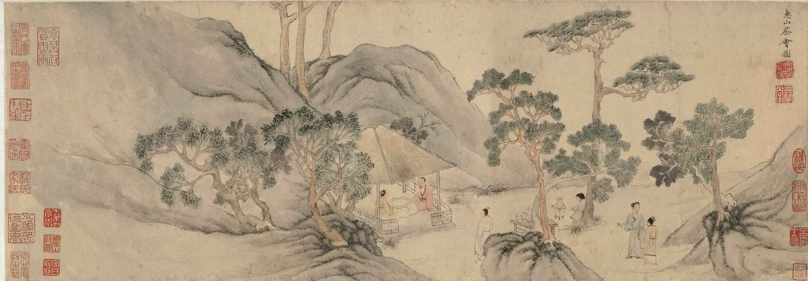

本頁收錄本書的序文、評賞與友人題贈，保留各自署名與原文。這些文字記錄不同的閱讀與交往；讀者也可以有自己的看法。Prefaces, responses and inscriptions retain their original attributions. They record different encounters with the book; readers are welcome to form their own views.
詩評

詩評Reviews
諸位詩友、學者讀《千山獨行》後所撰序文與評賞，謹錄於此。
許之遠先生，前中華民國立法委員，曾任中華民國教育部文藝創作獎古典詩詞與書法評審。《千山獨行》的序文與封面書名皆出其手；二〇二四年八月新書發布會，先生以九十高齡親臨。乙巳（二〇二五）夏，又自撰七絕一首，親筆書以相贈——這是傳統中國文化知識分子才華巧思，深情託付的經典風範。
1序—— 許之遠（時年九十）—— 許之遠
夫文運之盛衰，攸關國運之隨；文辭至於言，是其精者也，世不疑矣。然則詩詞至於文，其精煉反不如文乎？袁子才有句：“一詩千改始心安”，其嚴謹精絕，更過於文也。或曰：“詩有別才，非關學歷”。如既具別才，又加學歷，遂能博古通今，豈非更好？況前者有自限之虞，智者所不取也。
作者文刃先生，能以文刃為名，何懼嫉惡如仇，當有除惡務盡之意，豈藏頭露尾者可比！
偶覽文刃詩稿，頗多警句：如“七言題壁風流再”，此懷古有據之句也；“長恨高風無覓處”，是置己不可覓人，奇在自占身分也；“蒼茫獨對歷千秋”，歷千秋者，是蘇軾言“自其不變者而觀之，則天地與我皆無盡也”，作者用之，亦史筆也。《詠會稽禹陵》則古味盎然，《旭日詠煙臺》有一氣呵成之妙，《登廬山》令人神往。《詠周瑜點將臺》“卒鼎成”似“政鼎成”較佳，《黃山詩》似改《黃山頌》更宜，謹供卓參而已。
文刃有此能耐，若躬益謙，當能日新而月盛。問序於餘，樂而命筆，謹序。時年九十耳。
塵世苦辛未許違，扶輪策杖掩重扉。
河山所歷無情水，只有劉郎識路歸。
首句先定全詩的倫理立場：世途雖苦，並不因此免除一個人應盡的責任。第二句轉寫先生自身：輪椅、手杖、重門，一位九十歲的人說自己已不再遠行，七字之中卻無一字自傷。第三句再轉向受贈者與其所歷河山。末句借劉禹錫「前度劉郎今又來」之典，又將受贈者之姓嵌入其中。他闔上門扉，路卻未曾中斷；「識路歸」三字，由此成為留給後來者的一份精神囑託。


2讀《千山獨行》詩評四首—— 泰嶽歌 · 詠會稽禹陵 · 五峰引 · 盤山記—— 許厚全
【泰嶽歌】簡評：寫泰山，用歌行體，甚為妥當。初唐時期流行的這種詩歌體裁，大氣磅礴，慷慨激越，敘事抒情少羈絆約束且可以自由換韻。以泰山在中國名山中的地位及所承載的歷史文化蘊含而論，唯歌行體能讓具有遠古之思、哲人之眼、擅一氣到底的詩人一吐胸中豪情。文刃就是這樣一個難得的詩人。本詩從神話傳說到歷史事實，從地理地勢到實景摹寫，從文化內蘊到反思批判，文筆灑脫，氣勢豪邁，不長的篇幅容量卻甚大。
【詠會稽禹陵】簡評：此首古風以敘事為主幹，歌頌先賢，感慨時世。大禹治水傳說，作為上古時代的神話故事，事屬渺茫，但久已成為中華民族與大自然相處的範例。而大禹這個人物形象，也成為了智慧、賢能、為公不顧私的人民統領的化身。敘事詩比較難寫，容易寫得呆滯和僵硬，需靠“氣”來推動。文刃在這首詩中展現了以詩敘事的特長和氣韻悠長的才質，亦能見出他對於中國傳統文化中治國理家理念的熟稔掌握和深刻理解。詩在最後感情強烈，感慨嘆息，體現了作者追慕先賢、憂時患世的情懷，令人動容。
【五峰引】簡評：文刃是個以思想和理性見長的詩人，由這首詠五臺山的詩可見一斑。五臺山作為文殊菩薩道場、中國佛教聖地，寄託了太多俗世的祈禱和願望。正法傳播，國治民安，時世澄清，是紅塵百姓最大的福祉和利益。人們遠道而來，頂禮膜拜，虔誠祈願。惟願菩薩保佑，賜福加被。然而，詩人卻以對世道、聖地表示失望並持批判態度的情緒去看待斯山斯景。詩人憤懣、憂心忡忡，皆因目睹了世風日下、貪贓枉法之徒橫行的社會現象。面對一個積弊叢生的社會，詩人沒有消極隱退的打算，反而是激發出了浩然之氣，積極入世情懷陡生。壯哉！
【盤山記】簡評：江山之秀，人文底蘊，須待詩人生花夢筆去摹寫、歌詠；而詩人則須奇山勝景去充實胸懷，去浸染詩情詩意。從這個意義上說，詩人、詩筆和江山形勝俱為一體，唯三位一體才能有好的詩篇出現並流傳。從前言看，文刃並未曾親臨盤山，而是藉助他人的作品啟發才思，激發詩情，下筆如神，得此佳作。作為寫景抒情詩，寫景重在文筆優美，物境、情境交融，而抒情則全在發之有物，氣勢充沛。此詩寫景栩栩如生，山景物事如臨眼目，筆隨意走，轉換飄逸，趣意橫生。而作為一個習慣理性思索、一向對歷史持批判反思態度的詩人，文刃最終還是把思緒落腳在了歷史與現實的交叉地帶。這就使得此首詩篇遼遠深邃厚重，讀來既愉目賞心，又感覺心裡沉甸甸的。
3喜讀文刃君《千山獨行》詩集（冰清 · 作於壬寅春）· 全書詩評—— 冰清
近讀文刃《千山獨行》詩集，極為感佩。詩集精選了作者多年幾近走遍祖國的大好河山之所見所聞所想所詠的百餘篇近體和古體詩歌，其視野之廣闊，內涵之豐富，立意之高遠，用典之適度，古韻之鏗鏘，節奏之明快，和吐納風雲雄渾雄健的風格讓我玩味再三，欲罷不能。
應該說，我是從中領略到了詩人對中國古代典籍知識和經典詩歌諳熟於心，並深得其精髓的。我欣賞他常常不經意地站上了巨人肩膀，在對青山綠水的詠歎中有所超越創新；更喜歡他堅持靜心獨處，邊走邊看邊想邊與山水對話。隨著心靈與大自然的交融，感慨萬千，搖盪著性情，若不寫不唱，就不心安！
一 思接千載，情動於中
詩集以《泰山歌》歌行體開篇，將山之豪壯氣勢、斑駁陸離的石刻，和古代帝王屢屢在此封禪以彰顯自己功德政績而不惜勞民傷財的遺蹟幾相照映，發千古之憂思，嘆時事之多艱。其旨趣無疑有別於諸多詠頌泰山題材的詩作，而讓讀者有耳目一新之慨。
《詠柳子廟》也是一篇情動於中而發於外的詩章,是詩人瞻仰柳子厚祠古文物後留下的百感交集之作。先看詩章：
僻地一方何幸運，文才千古此承傳。
西巖欲赴萍洲晚，東寺思歸瀟水寒。
當世不循循舊跡，今時莫寫寫江山。
詩之首聯破題，先聲奪人，將柳河東因參與永貞革新運動失敗被貶永州十年的處境心境和自己激憤之情和盤托出。其中之“憂懼”出自柳宗元《始得西山宴遊記》:“自余為僇人，居是州，恆慄。”詩人巧為援用，既為全詩奠定了肅然凝重的情感基調，為主題昇華作好了墊鋪；也為統領全局將主旨點明。頷聯於承接中見寥廓，拓展中更深邃，突現了柳宗元在漫長歲月中以尊嚴的方式承受著心靈苦痛，並因此成就了他的千古文才。讓人無限景仰。頸聯書事用事，由景取情。詩人再次以自我感受交錯互襯兩種境象，即將柳宗元《漁翁》寄情山水尋求超脫和《夢歸賦》思鄉戀國憂國憂民極度哀怨悲憤而沒法超脫相應相避，並寓情於事，借萍洲、瀟水之“晚”“寒”抒發自己回味先賢不朽之作難以抑制的神思。有別於頷聯議論式入事；也非純以景寓情。其聯內寄寓的轉換和聯與聯意蘊的擴轉自然得體，足見功力。再看尾聯。轉聯情性既出，其直抒感慨以情見志便水到渠成。正如詩人於自評中所言，面對柳宗元守節安貧的遺風，不由想起世俗中“逐利媚上不擇手段為榮，羨物質而恥精神”，憂憤難平，便“以柳子為千古知音，以追隨他守節安貧的遺風為樂事”，故有“當世不循循舊跡，今時莫寫寫江山”之慨。——像這樣識前賢之所美而發胸臆之語，無疑道出了詩人弔古感今超越世俗侷限的創作初衷。而詩之曲折有法，前後呼應又正好體現詩人精巧的構思和詩思之神遠！
誠然，詩歌是一種富有韻律而且充滿想象的語言藝術，是人類靈魂的真實載體。這正如劉勰所言，“文之思也，其神遠矣。故寂然凝慮，思接千載；悄焉動容，視通萬里”。文刃《千山獨行》中不少詩章，可為這一經典名言之心印默契。如己亥春辭天山東歸過烏拉泊鹽湖之詠,對久久縈懷的漢唐軍事防禦體系中的古輪臺遍訪不得之愁緒交加(詩集p70):《同遊鄭州黃河贈友》(p25)在登中華龍脈邙山，遠眺古戰場和楚漢中分天下的鴻溝暮雲、黃河古渡之雄渾氣勢，千百年來逐鹿中原的爭戰和深重災難便歷歷在目，其聲響之激盪迴旋使詩人不由自主地呼出了“千載尚聞刀劍鳴，人文初祖忍哭泣”。詩人慨嘆之深沉悲愴直擊靈魂，讀之又有誰的心靈不為之一顫！再看《謁潮州韓文公廟碑》(p126)，詩人面對蘇軾獨具慧眼讚譽韓愈的道德、文章和政績的廟碑，竟無語哽咽。其激情如此難以自抑，是因為韓文公在鵬展九天一朝落難三百年之後仍有幸得到蘇仙的敬慕和不絕於心的哀傷痛悼。隔代知己啊，心靈契合如此！它穿越著時空，彪炳千秋。何等珍貴！
古人有言，“作詩本乎情景，孤不自成，兩不相背。凡登高致思，則神交古人，窮乎遐邇，擊乎憂樂，此相因偶然，著形於絕跡，振響於無聲也”( 謝榛《四溟詩話》) 可見，登高望遠，在天地之間與古人對話以抒發情感既為文人崇尚之風，也為詩詞創作提供了良好的載體。
神交古人，於登高望遠時與天地對話以抒發情感，這是我讀《千山獨行》後最為感動和嚮慕的特點之一。綜觀文刃之詩，竟無一純賞景遊樂之篇。何也？詩集的自序無疑為我們作出瞭解答。詩人認為“採用中文尤重詩詞的精煉表達，正是源於這種已經內化成本能的需求，是無限時空和有限人生博弈達成的積極妥協。詩詞，尤其古詩詞，對我來說無疑是高效的承接過去、書寫現在、開創未來的最好方式。”(p2)請注意“內化成本能的需求”一說。內化，即內心遊移。怎樣才能讓內心遊移；這種遊移又能不能任詩人懷抱而成為他本能的需求，這就與詩人的審美好尚、見識、悟性和堅持性關係甚為密切。而《千山獨行》之所以讓我享受到了這一審美樂趣，正是詩人學養較深，見多識廣，在經歷過人生百態之後有著對時代發展趨勢的感知和對生命的理解和關懷，故在觀賞景物和古代遺蹟時都能持之以恆地以性情之正寫胸中之蘊而形成了他獨特的被“內化”了的天然本色。讀之，我的眼睛常為此一亮！
二 空明澄靜，自在相隨
我之所以用這標題是因為《千山獨行》是詩人靜心獨處，情發於衷之作。詩人在多篇詩前言中曾有過這類似表示，獨處獨思、澄心靜氣地，可算讓他嚐到了心靈和自然山水、人文古蹟對話的甜頭；當然他也提到過對話的另一方式即自己與自己對話。依我體會，這後一種對話指的是心靈的訴告和慰藉，它可超越象外和時空，將諸多感受融入對鏡像的描述和思慮，其中尤以感物寄興寓情、詠懷言志等更能體現詩人孜孜以求的對生命的關懷和尊重。像這樣在靜觀靜思中將對外部世界的感知轉向內心世界的抒發無疑體現了詩人靈魂新的覺醒而使作品更為深邃深沉。
大家知道，虛靜原是一個哲學命題。將它引入文藝美學領域範疇是要求作者具有洞澈而靈明的心性以騰出足夠的心理空間去容納詩思活動而臻於創作佳境。“靜而後能安，安而後能慮，慮而後能得。”(《大學》) 當空明澄靜的境界融入所見所聞，詩人便能以豁達無礙的自由心性與所看的景融為一體，情性相感地得其貌又得其骨。這樣，又何嘗不會讓詩人釀出筆意縱橫之作。
對世人，對作家和詩人，獨行獨處獨思的確是一個檢驗，用它可以測出一個人的靈魂的深度，這正如只有湖的深邃才有湖面幽寂如鏡那樣，詩人內心的靜和淨才會使那許多屬於自己獨特的感受蹦將出來。“有志沖天春永駐，無憐掛袂歷寒冬。我心澄澈風初定，波湧沉沉至此清。”這是《詠洱海日出》(p87)後續部分。咋一看是對湖水靜謐蔚藍洱海美景的讚頌，細一想則是詩人在以澄澈之心，抒發自己雖經歷寒冬卻春色永駐的一份自得之感，其內心的淡定和俯仰之從容也就使他贏得了安閒自得，通達無礙！
再看《詠津門》(p51)這篇以攬景、泛舟、遍遊、思壯美、感歷史之悠遠、贊中華博大深厚的人文精神通徹透闢的詩章。詩以津門要衝之具象入題，之後便順筆而下，以其首倡洋務之獨特不凡擇取最富代表性的情事兩相映襯和比對，即以小站練兵之威懾態表其私；以“飲冰室”書齋之內熱贊其懷。像這樣把張揚和收斂放在一起說，不僅從出句與對句的開合、跳蕩中顯示出事物自身的異趣；而且也從褒貶互見中體現了詩人沉心善照深明事理的不同凡俗。基此，尾句“六百年間繁華地，五流緩緩匯晨昏。”這一對歷史的慨嘆和對現實的思索就自在自如地像順水行船不費勁地抒發出來了！
以上可知，致虛守靜是文刃君詩作創作構思中一種心理狀態。有了這一自由自在的審美心態，他對事物的觀察體悟想象和創作中的審美吐納便常常不以目視而能神遇了。如《詠嶽麓書院》(p101)頸聯在盛讚嶽麓書院最有歷史意義的朱張會講的學術民主和功緒卓殊的曾國藩左宗棠雖情性相異爭執頗多但最終因景仰有加和自身人品之正而消除了怨懟，之後於尾聯自然溢出“更有憂民思壯士，殘雷一曲氣沖天”這一超越時空的神來之筆。究其實，由譚嗣同自制並伴隨他數十年的“殘雷”早已被北京博物院收藏，而詩人立於三千里外的嶽麓書院還能聽到它不彈自鳴的清越之聲，這不正好象徵壯飛先生在時務學堂以琴治心之琴心不絕和變法維新失敗後為了民族興亡捨身赴難慷慨就義的精神永恆！絃歌不絕，何其貼切靈巧。像這樣以比興寓意，將琴聲與人格化之身緊相契合，讓心和物融和在一起互為表裡，其意在言外的韻味兒無疑觸動著心靈給予讀者以餘味不盡的審美感受!
綜觀《千山獨行》，像這樣無聽之以耳，而聽之以心，因感物而生情的詩章詞句還有不少。這種心聽不正是以心靈的虛空靜素接納事物真象之後貫通於心!
三 尊古不食古，希賢更養賢
前已提到集祖國山水之精華薈萃，經過匠心經營予以再造是《千山獨行》的一大特色。其中尤以詩人自出心裁的不凡詩力和以真情善性之釀就更令人稱道。
古風《過華山》(p22)是文刃君丙申離西安赴洛陽，於太陽快落山時遙望華山之作。詩人在描述西嶽這一中華文明之發祥地高聳入雲之後，手心相應地以馳騁的想象徵引了李白《古風·其十九》中“邀我登雲臺，高揖衛叔卿，恍恍與之去，駕鴻凌紫冥”故事和這一超凡絕塵的詩句，將自己尊尚古賢希求仙聖神遇的心識袒露了出來:“衛叔無處覓，太白有遺篇。踽踽獨行路，相伴唯古賢”。詩人暗暗關合著自己情境，將思緒飛向千多年前“駕鴻凌紫冥”的青蓮居士和仙聖衛叔卿身邊，於孤單寂寞時與久久仰慕的仙侶賢人結成形影相依的伴侶而慰藉著心靈，其思賢若渴睥睨世俗的高情逸興，值得細味！當然，若從詩詞創作的角度思考，借鑑不等於照搬，師古也不影響詩人的別出心裁。故就《過華山》全詩蘊含見賢思齊的意思來說，是有別於詩仙所繪漫遊仙界憑虛欲仙之優柔飄渺的...
又如《詠古徽州太白樓》(p43)丙申秋到訪安徽黃山練江西岸太白樓時，憶起《太平廣記》所載青蓮居士年少時慕名訪戴天山道士許宣平不遇而題詩於壁的舊事；不禁想到當時即使自己可在樓旁題壁卻也沒法見到詩仙。如此，油然而生出沉甸甸的感嘆：“濁世青蓮未可尋，黃昏樓望見秋深。有心花落和雷雨，無意鳥鳴通古今。一飲練江知醉醒，半生慾海忘浮沉。七言題壁風流再? 玉液金樽饗故人。” 詩從追尋清白聖潔謫仙人對景興起，以“未可尋”抒發未能如願的失意之情。其中“尋”字精煉傳神，凸現了思賢的虔誠執著。作為詩眼它像畫龍點睛點亮並統攝了全篇。如頷聯富有哲意的寫景寫意抱而不脫，頸聯一虛一實以詩仙曾飲酒於此忘卻煩惱瀟灑出世，映襯自己半世生涯苦苦追尋以求精神悠遊自在的情態和心境，以及尾聯就題生意抒以超常妙想都緊緊圍繞著敬賢思齊以擺脫世俗之情這一主旨展開——真可謂讓“尋”之切、“尋”之誠意無斷續而舒捲有情！
另，《藍山夜臥》(p140)是文刃君甲午深秋夜宿藍山賓館，因日間登山所見而神思纏繞徹夜未眠寫就的一篇古風。詩的前部分以自己沉澱著的情感和內在的精神修養通過象徵、明喻、隱喻附麗於奇山異水、深峽流泉飛瀑，真可謂詩心到處草木皆可敬；隨後又以回程時重雲蔽湖、樹葉稀疏且尋流不見時噤口不能言導出難以釋懷的惆悵。詩人不僅將山水賦予靈魂而使之人格化，還以反襯法將自己尋尋覓覓中的歡樂和愁緒作出強烈反差比對，讓我們隨著他的腳步、跳動著的脈搏和思緒的起落迴環旋繞，無疑細心讀者能很好地體味詩人融情於景的微妙構思和獨特的審美體驗，並對這些寄意言外的詩人之景有著心靈的共鳴。故詩人細膩地寫出尋流中見到水、見不到水時波動著的情緒，為的是抒發自己內心世界的憂樂情感。像這樣景中有情、情中有景，既使景語因情語顯其靈活，也讓情語因寓於景而語厚了起來。——到此，詩作之醒旨明志已水到渠成:“房中久坐垂頭睡，神思纏繞夢魂牽。”“夜半明君動碧波，粼粼波光星之河。猛醒潭水已入海，秋波頻顧態婀娜。我願秋風送秋水，隨夢伴我到銀河。”讀著這吐胸臆的收篇辭，我們又怎麼不會為詩人尊賢慕德噴發著的激情而感動。當然，像詩人這樣運用視覺聽覺靈覺等多方面的想象聯想給了我們滿滿的畫面感，也更讓我們有如身臨其境而感同身受。
不過，話也得說回來。藝術的生命在於獨創，作詩字畫技藝無一例外。而詩歌作為主情藝術，比起其他藝術更具有主體特徵。文刃君不少詩作之所以趣向不凡可圈可點，原因之一是他善於在學習借鑑中創新，並以抒發自我情懷為樂。故其心靈感蕩之美常常引起讀者的共鳴。
《衡山吟》(p99)作於己亥五月，詩以“朱雀來世外，邈邈逾萬年。上應軫星翼，下治大江南。鈞物銓德天地稱，風華獨領絕中原。南山千古秀，振羽入雲端”開端，將衡山這一先天特有“吉祥”命意濃墨重彩地寫下一筆。若從字面上看，與杜甫《望嶽》其三以衡山為朱雀所在地起筆相似。但當你再往下讀，便知詩人之所以借衡山這道教佛教、唐堯虞舜夏禹祭天地以安社稷，和安葬著曾被黃帝委任教民化育萬物的南嶽大帝之勝地激發興意，是為了引領詩歌後續部分在盛讚它人文景觀特色的同時，反襯詩人當時在面對現實 “物重德下”之弊卻無能為力而深感愧疚。像這樣振筆直遂抒發內心感受的篇章與詩聖以微婉之詞寄諷諭和勸勉的旨歸顯然有所不同。再者，若從詩作之突破和超越離不開對現實社會這一根基的關注來說，師古之途，志在濟時，故文刃君在《衡山吟》前言中所述自己因懷濟世情而作的初衷正是他對師古不食古的清醒認識。
最後，再說說《千山獨行》有關廬山贊詠的詩作。廬山因其雄奇險秀聞名於世千古名篇不少。其中尤以《題西林壁》《望廬山五老峰》《廬山謠寄盧侍御虛舟》《望廬山瀑布水二首》《大林寺桃花》更為膾炙人口耳熟能詳。這樣，要在寫作中將詩思別出新意就不是容易的事了。當然文刃君對上述詩章也是爛熟於心並得其精髓的，故如何力避效顰而發己之長就成為他構思時的第一要義了。他想，像上述蘇軾《題西林壁》這類即景說理、寄至味於哲理以啟人心智的韻章，其思致之渺遠肩背難望，“所以我不從哲學入手”(參見《文刃談<廬山謠>》)，但先賢們寄獨悟於遊蹤景象之超脫情懷和力主性情不貴奇巧的作詩之道則應好好學習。這樣，他一方面將廬山作為一個小宇宙對其上秀下豐通體之美加以讚頌，與上述名篇視角的點面、寬窄的不同而折射出因時代和實察時條件的不一樣；另方面則是寄感悟於所訪所憶的大禹、周匡遺蹤勝蹟和詩聖詩仙香山居士有關廬山的傳世之作，將他們超逸絕塵任心自在的情懷情性和沉練滄桑之感匯成一段段心路而讓自己收穫著快樂並寄寓著思慮。像這樣多角度多方位將外境引動著內心的體驗，通過聯想將感慨融為一體，讓“吾”“心”之“悟”貫串於景於人於事於史而綻放著詩的生命，無疑是立於人類思想文化積累巨人之肩，從文化的根脈上汲取滋養，又不乏自我靈氣底氣的好作品。其師古不泥古，立於創新，實屬難能可貴！這也正如詩人能取諸家之長而自成風格那樣立意於不棄先賢、不欺其志，以“獨立的精神、自由的思想和由此帶來的面向全人類面向未來的創作激情”和“對時代發展趨勢的感知、對生命的理解和關懷”“充分吸收古典詩詞中優秀的部分並結合時代在認識和語義演變方面進行前人未曾嘗試的新創作”（參見《千山獨行·序》）——由此可見 詩集自序中說的這樣，詩人是既有明澈的詩學思想和審美訴求，又能兢兢業業地將這詩歌創作觀寄心楮墨，從而寫出了不少超越庸常、超越慣性並富詩意的遊山之什。其箇中見聞學識之廣博、才思文藻之深敏、匠心之獨運和特立獨行地秉持本我真心，真讓我欣羨不已！
蕩蕩襟期，心馳塵外，歲月長流林壑趣；
盈盈詩卷，夢繞寰中，珠璣何興市朝聲！似鶴軒昂，如峰堅韌，櫛風沐雨纖塵盡；
—— 冰清
臨泉見性，順道為臻，搖筆鋪箋萬象開。
4雲亙山巔，詩出腳下—— 讀文刃《廬山謠》—— 古土
詩人“登山則情滿於山，觀海則意溢於海”（劉勰《文心雕龍·神思》），大概是因為山和海能代表詩意的兩種特質：崇高和博大。尤其登山，總給人以遠離塵世甚至遺世獨立的感覺，似乎山愈高，愈接近靈氣。所以中國古人登山必賦詩，尋句多登山。詠誦山嶽的名篇佳句可謂多矣！
面對這一閱讀現實，有人認為古人的詩作門類齊全，且已登峰造極，今人只有閱讀、欣賞和膜拜的份兒。但有人對這一論調不以為然。當今詩人文刃就是其中一位。嚴羽在《滄浪詩話·詩法》中說：“詩之是非不必爭，試以己詩置之古人詩中，與識者觀之而不能辨，則真古人矣。”文刃不僅不憚將自己的詩放在古詩中比較，而且矢志超越。他曾對訪者說：“現代人寫詩，有太多可以超過古人的地方，而他們沒有使用，沒有探究。要超越古人，一定要站在古人的肩膀上。站在古人的肩膀上，不是你站在他的詩詞之上就可以的，不是的！你要知道古人肩膀是由什麼組成的，什麼支撐的，你必須要了解他們所有的背景和經歷，然後再寫。我所寫的東西完全是個性使然，是我自己的見解，和他人的完全不一樣。”我覺得，文刃不僅有其志，也有其才，讀過他的山嶽詩，就知道文刃此語不是狂言，也不是誑語。他用自己的創作實踐回答了這一問題。
文刃遍遊天下名山，一直詠山誦水，佳作不斷。到有“文化名山”之稱的廬山，更是思如泉湧，佳作迭出，接連寫出長短幾首。其中，與李白名篇同題的《廬山謠》（李白詩題為《廬山謠寄盧侍御虛舟》）屬於其中佼佼者。“嗟爾匡廬秀，天下冠群峰。旭日透雲海，削出金芙蓉。”開頭便是一聲驚歎，因為山的雄、奇、險、秀，不得不讚，不得不嘆。此所謂“好為廬山謠，興因廬山發。”是什麼景色觸動了這聲讚歎？下文兩句作答：“旭日透雲海，削出金芙蓉。”熟悉廬山的讀者都知道這裡寫的是廬山五老峰。李白用“青天削出金芙蓉”之句，但其主語是青天，雲霄之上，五峰挺立，這不是老態龍鍾的五位老人，而是五朵金色的芙蓉，夠新夠奇。但文刃還不滿足，他將鏡頭拉近，點出動作者是旭日，噴薄的日出透過雲海滾滾而來，“削出金芙蓉”來。深究一下，這就是為什麼芙蓉是金色的原因，因為遠日已經照在高高的山峰上了。天空是靜的，旭日是動的，這就更加生動，有動感；與一聲長嘆相配，有聲有色。因為詩題為謠，遣詞造句可以更加靈活，重要的是可以隨著情感的起伏產生新的節奏。古人對此分類精準，有歌、行（有時歌行在一起）、謠、辭，也有引、曲、操、犯者，不一而足。與前面提到的李白的《廬山謠》一樣，下面轉為七言句子，為進一步的歌詠轉調。細讀之，你就會發現，這不僅僅是從五言到七言的轉換，而是將鏡頭推遠，視野進一步開闊。“粉黛山抹湖為鏡，朝霞入水澄碧空。峨峨峰嶺晦明幻，渺渺江湖一攬成。”這四句寫山水形色明暗，渾然一體，妙趣天成，儼然為眼底畫卷。這時太陽已升起，陽光照進湖光山色之間，色彩層次分明，遠近搭配絕妙。其中後兩句“粉黛山抹湖為鏡，朝霞入水澄碧空”有照應金芙蓉的含義。原本金芙蓉就有美女之意，她們對著澄明碧澈的湖水，描黛敷粉，“朝霞”點明是晨起時節的精心裝扮，所以這兩段不僅轉換，而且有密切的關聯。同時用美女晨起梳妝也照應李白的“九江秀色可攬結”這一詩眼。山是黛青色，湖水像明鏡，畫面感十足，且詩意優美。看得出，“峨峨峰嶺晦明幻，渺渺江湖一攬成。”這句也是化用了人們傳頌的古人句子，“峨峨匡廬山，渺渺江湖間”。可見作者對前人詩詞的熟稔，就像他說的“你要知道古人的肩膀在何處，是什麼構成的，你才能站在巨人的肩膀上”。正當詩人遠眺，沉浸於遠方的山水畫卷時，清風徐來，風雲變幻，“俄頃雲霧起，天地隱真容。迷離今古路，踽踽訪仙蹤。”廬山雲霧十分出名，如果廬山沒有了雲霧，如同黃山沒有了松柏一樣，就會遜色不少。但這不是一般的雲霧，而是“天地隱真容”。我們一定要注意，風捲雲霧、撲朔迷離，固然是眼前景色的變幻，更重要的是在時空的變化上，其深意著落於“今古”二字。由美景的廣闊鋪陳通過眼前的雲霧，與青史浩渺雲霧的轉換，自然而強悍地過渡到廬山懷古之思之情的縱深幽遠。歷史的事實總在迷霧之中，只有有心人去不停地探求，才會撥雲霧而見青天。其中一部分智者做到了與古人對話，達到心心相印之靈性交流的層次。
以下八句，行雲流水，橫跨千年，歷數匡廬先賢事蹟與遺蹟，“禹穴駐足何北望，指點九江俱向東。”讓人想到了司馬遷《史記》第二十九卷《河渠書》中“余南登廬山，觀禹疏九江，遂至於會稽太湟……”的句子。想必博學的作者也會注意到，這是“廬山”二字首次見諸於典籍。這句的主體，既是古代治水英雄大禹，也是當代詩人文刃，此時此地他們的腳印疊加在一起。作者把這記錄性的文字詩化了，並增加了“北望”“向東”的方向，擴大了縱深感。遙想公元前126年史學家的考察，詩人文刃在兩千多年後的遊山，當然也有改天換地之雄心。李白曾說“唯有飲者留其名”，除了指點江山的英雄大禹之外，讓作者心動的還有那些為保持高潔品格而隱居山林的賢者。所以下句便說：“周匡避仕飛昇處，俗客高揖遠慕名。”有傳說，早在商代初期，有一位名為匡裕（一說為匡俗）的先生在廬山一帶修道，後來周天子聞之，召其入仕為國效力，但他避入深山，最終修道成仙。人去廬存，這也正是廬山又名匡廬的原因。追古懷今，不能不提到文刃所敬佩的兩位詩人，李白和蘇軾。“太白方疑來世外，東坡早悟道初成。”李白曾結廬廬山，可見他對廬山的喜愛。所以李白寫廬山有生活底子，無論望瀑布，還是訪古寺，都信手拈來，妙句天成。正如嚴羽所說：“大抵禪道惟在妙悟，詩道亦在妙悟。”（《滄浪詩話·詩辯》）文刃曾提及認同以下說法：蘇東坡如果按李白的路子寫廬山，就很難勝出。東坡於是另闢蹊徑，用“橫看成嶺側成峰，遠近高低各不同。不識廬山真面目，只緣身在此山中”，寓寫景與哲理於一體，棋高一籌。所以文刃借李白“琴心三疊道初成”來說“東坡早悟道初成。”，也隱含了我們開頭所說的文刃志在超越的雄心。“豈有古來真名士，大林淚灑桃花風。”此處不僅是與古人的溝通交流，還包含了與古人千年前來訪時的季節、時空、心情、思考的比較，也是對不論古人今人所共同面對的不可抗拒的“寺去人歸”的宿命的深深感嘆。筆力雄勁如白樂天者，千年回望，也只是在極其微弱的機緣下通過文刃在此所見的桃花含淚體會到他當時心靈的顫動。而面對眼前此景，那註定逝去的千年之後，能感受到詩人文刃此時心靈顫動的人又註定是何其渺茫且難以確信。縱使如白樂天得文刃般如此幸運，對千年前的他又有何不同呢？故人遠去，只有廬山還在，桃花還在，我們只能用“淚灑桃花”這一形式與古人溝通。這裡想到了文刃的另一首廬山詩：桃花仍對暮春風，寺去人歸今古同。淚灑江州無限雨，晨昏長洗千年紅。（《廬山大林寺原址》）
我們將兩首詩作對照閱讀，更能體會詩人的心境。大林寺是廬山名寺，為四世紀僧曇詵所創建。曇詵為著名高僧慧遠之弟子，慧遠大師又是中國淨土宗的創建者，也是“阿彌陀佛”四句經的首創者。但大林寺一再建而毀，毀而建，最後覆沒於歷史的長河中。只有少不更事的小學生還在讀白居易的《大林寺桃花》“人間四月芳菲盡，山寺桃花始盛開。長恨春歸無覓處，不知轉入此中來”。“鋪究前史，弔古傷今”（南朝梁簡文帝《悔賦》），歷史的滄桑，總是讓我們哀痛，那些飛自天外的雨，誰能確認它們不是古人的“花濺淚”呢？也只有學童的琅琅讀書聲，給人以一些慰藉。可是誰又能保證他們懂事之後不會有“寺去人歸”的感傷呢？但人是不能一直沉浸於這種情緒中。詩人筆鋒一轉，開始寫下山的情景了，“風來蕩天清，引我下碧峰。天梯倚絕壁，步步嘆心驚。斷崖仰千尺，高鳥巢其中。蒼翠沾衣溼，寒浸五月濃。草木滿山知冷暖，映日杜鵑觀欲燃。”這些五言句子的節奏，正如詩人下山的腳步，一步一景，一個轉彎一次感悟。從這裡我們可以感受到作者對節奏的把握已經到了爐火純青的地步。梁宗岱先生說：藝術上的最高力度在於“抑揚高低皆得其宜”（《詩與真》），《廬山謠》此處的詩句節奏正是這一觀點的極好印證。在山上已經很久了，由於時間的變化，光線的轉換，五老峰此時還原了其本來面目，來送別下山的詩人。“五老肅然立，相送更無言。三疊殷勤轉，轟鳴落深潭。”既是寫實，又是對“風來蕩天清”這一轉折的再回顧，五老峰驚歎於所見到的今古相接，難以言表，只有肅立目送了。詩人彷彿從三疊泉瀑布飛流入潭的轟鳴裡聽到了殷切的叮嚀。說了些什麼呢？這就是這首詩的最後一節。“人生欲識廬山面，唯有快意居其間。登臨自古應長嘆，仙人乘風何時還。蕭蕭異代空祈盼，耿耿前途夢魂牽。”這些既像詩人自己的體悟，又像是五老峰和三疊泉千百年人生經驗的交代。我們在詞語的疊相和古今的交融中，感嘆構思之妙。而到尾聲，又一個驚喜出現了，“回望遙辨來時路，山頂雲橫意闌干。”這裡的“來時路”，既是詩人下山的路徑，也是人類千百年的探索之路，故此“遙”，我們也只能像看到亙古橫臥的山頂之雲，不能得到明晰的答案，但啟示卻無時不在。
正如文刃的另一首廬山詩所言，“朝攀撥霧仰峰險，暮飲和露滴月寒。修道方知非本願，浪跡人世勝飛仙。”（文刃《登廬山》），文刃一直會走下去，走在參訪名山大川的道路上。但我們相信，他絕不會重複，而是一步步登上詩歌藝術的巔峰。
5水亦有調，歌無盡頭—— 文刃《水調歌頭·大道隱幽暗》賞析—— 張丹
《水調歌頭》的詞牌，古人今人前人後人填詞無數。豪放婉約、閨閣酒肆，自古《水調歌頭》歌盡詞未盡。賞一闋文刃《水調歌頭》猶有歌盡詞未盡之感。
《水調歌頭》• 大道隱幽暗
[ 毛滂體] / 文刃
大道隱幽暗，對月夜憑欄。知音今古何在，歌盡渺塵寰。 眉斂千庭皓月，目盡秋江萬點。無語問長天。文成風生雨，時蹙黯心瀾。
浮生夢、身後事、付笑談。安得林下歸老，竹鶴引梅軒。自在清風兩袖，問候落英一路，高掛五湖帆。閒笛喚滄海，醉墨寫青山。
道德經說 “道生萬物，從與自然。故道大，天大地大，人亦大。域中四大，人居其一。” 這闕詞，開篇從“大道”著眼，“憑欄”為點，大開大合、開山明義。“大道隱幽暗” ，一個“幽暗”囊括千年歷史滄桑，無以盡言。“對月夜憑欄”，從古至今，詩人、詞人皆夜月憑欄或獨自，李後主、岳飛、柳永、韋莊、歐陽修、馮延巳、辛棄疾等等。憑欄憶古思今，無語問蒼天。月夜憑欄點出時間與地點，且慨然長嘆 “知音今古何在，歌盡渺塵寰” 。當然，“大道隱幽暗，對月夜憑欄” 或可只指眼前一條小道或大路，隱約在樹蔭間或樓房陰影下，倒影幽暗。 想來，雙關之語，才是文學之境妙所在，大道至簡、道法自然。
憶古思今、慨然長嘆，“知音今古何在，歌盡渺塵寰？” 一句“何在”之問，問天下英雄，古今豪士，誰為知音？ 兩千年前鍾子期死，伯牙終身不復古琴，無言譜一曲知音絕唱。今人，幽居城市叢林，穿梭人際苦海，笑是否融化漠然，淚是否燙傷剛強？可曾遇知音，無語問蒼天！與此，筆鋒急轉至眉目，千庭皓月，萬點秋江，人在紅塵，紅塵在望，長天亦無語。
今人仿寫古詩詞或現代詩詞，多喜歡先鋪墊，以意明再造境，刻意為之促寫詩詞意境之美。殊不知，真正登峰造極的文字只簡練純熟，平鋪直敘便已是胸有丘壑、意境千重。而往往，東拼西湊、詞語堆砌，卻入了畫蛇添足之尷尬之地了。上闋這幾句便通篇透視、一目瞭然、一氣呵成、不復贅言，所謂“文成風生雨，時蹙黯心瀾。”
李白“浮生若夢，為歡幾何。”
杜甫“千秋萬歲名，寂寞身後事。”
楊慎“古今多少事，都付笑談中。”
蒲松齡“大業已歸老林下。”
蘇軾之竹鶴 “此君何處不相宜，況有能言老令威。”
陳基“兩袖清風身欲飄，杖藜隨月步長橋。”
吳商浩“好同范蠡扁舟興，高掛一帆歸五湖。”
末句 “閒笛喚滄海，醉墨寫青山，” 更是吹梅笛怨、醉意默寫、默寫青山、青山如畫。乍看，用典極多，細品，恰到好處，絕無繁複，深意妙思。
大道憑欄、知音何在、無語問蒼天，問這浮生夢，問這身後事，皆付笑談中。一日，安得歸老林下，竹鶴在梅軒，自有清風兩袖、繽紛落英問道，五湖帆影高掛，啟閒笛以喚滄海，研醉墨以寫青山。
讀一首詩，賞一闋詞，詩意詞境，各人品味、自在其中。 文刃，相識幾年，皆因其詩詞恢宏有磅礴之氣，豪情有天地之度。 讀文刃詩詞百餘首，句句雄渾、字字精煉，首首波瀾壯闊、闕闕意味深長。不似今人仿寫古韻，恰如古人詩意天成，不同他人刻意飛揚，恰是詩詞今古皆通。詩無達詁，詞無意盡，惟願江山多有此等才人出！
6從《泰嶽歌》看文刃詩詞中的大山文化—— 楊青
文刃在其即將出版的古詩詞選《千山獨行》序中寫道：“歷時多年所創作的數百首詩詞竟然無意識地以山為最多最愛”而且讓他頗感“得意”。雖然他說是無意識，但可以看出對山的喜愛甚至偏愛已經融入他的創作意識，知識結構和性格血液中，影響著他的為人處世和三觀。 《泰嶽歌》從它形成的神奇超凡，冠蓋五嶽，各朝皇帝君王封禪之時大多要來此向天報到的尊貴地位，歷代文人墨客留跡碑刻之多等等方面，使泰嶽成為中國文明的象徵，成為千山最具代表性的典型，也可以說聚集了所有名山的主要特點。是中國傳統文化，名勝古蹟的集大成者。而文刃恰好將這些濃縮概括在這首經典的詩歌裡，是他千山行的統領之作，也是他所有“山”之歌詠頌詞典章的代表之作。下面我們將《泰嶽歌》按內容和氣勢，分成四個段落來分析整首詩的含義。
一、壯哉盤古歿，頭顱化泰山。拔地擎日月，通靈接九天。勢吞西華壓衡嶽，氣奪中嵩秩北恆。東方堪為首，萬物春發生。陽谷入汶陰入濟，水繞環侍幾百峰。岱廟月觀南天杳，玉皇登臨唱其名。泰嶽，從它不凡的誕生，到它長成的態勢，前四句五言二十字已經概括完整。這是全詩之起首，也是序曲。多麼壯觀啊，中華民族遠古傳說中的盤古，是天地初開後第一個巨人，或稱為神，其體形隨著天地擴張而膨脹，死後肢體分解，變成世間萬物。他的頭顱化為東嶽泰山。在中國東海之濱拔地而起，擎日撐月，照亮晝夜(三國時的傳說盤古的眼睛變為日月，開目是晝，閉目是月)。所以泰嶽可以與高達九天之上的靈界相連接。可謂氣勢之磅礴，西吞華山，南壓衡嶽，勇奪中嶽嵩山，排序定規北嶽恆山，自然成為五嶽之首。泰山屹立於世界的東方，也巋然於華夏的東部，堪稱眾嶽之首，這裡萬物生機勃發，森林茂盛，花草叢生。一片欣欣向榮的春天景象。 接下來“陽谷入汶陰入濟，水繞環侍幾百峰。岱廟月觀南天杳，玉皇登臨唱其名。”是對泰嶽的具體描述，四句七言已將泰山及周圍的環境詳細記錄清楚，沒有一個多餘的字。清代姚鼐《登泰山記》曾記述：“泰山之陽，汶水西流；其陰，濟水東流。陽谷皆入汶，陰谷皆入濟”。文刃直接以一句概括為“陽谷入汶陰入濟”，用典不著痕跡，應用自如，古典文學底蘊深厚可見一斑。汶水濟水繞山而流，環侍泰嶽周圍的幾百座山峰叢巒，山水相依，美如仙境。登泰山時經岱廟登上觀月峰上的觀月亭，遠遠向南天門望去，周圍山巒疊嶂在月色下靜謐朦朧神秘。登上南天門，就連玉皇大帝也和歷代皇帝君王一樣，向蒼天頌讚，報上自己的姓名，尊號，以求上天保佑自己當朝親政一切順利。
二、摩崖望心驚！筆筆斑駁聞刀刻，步步溯源欲何之？倉頡已去書猶在，卻叫遠古皆漫失。大道曾可知?一路上望著摩崖上歷朝文人墨客所刻寫的詩文，讓人感慨萬千，驚歎不已！那歷經風霜雪雨的字跡呈現眼前，似乎依然能夠聽見當時一筆一劃在石崖上的刀刻聲。我們一步一步觀看這些字跡，想追溯每個字的源頭，又豈是我們能夠完全探索得到的呢？倉頡離世早已不知幾千年，但他造的字卻一直沿用至今，不論是以書法雕刻於岩石之上，還是後人拓碑成字帖再到印刷術的發明，總之，中華文化最主要也是世界上流傳下來最古老的漢文字，雖然保留了下來，卻失去了許多遠古造字時的象形意義。那存留在岩石上的書法文字在漫長的歲月裡，風霜雨雪的侵蝕，人為的破壞等等大都失掉了，怎不讓人遺憾連連，扼腕痛惜！天啊，既然你讓我們擁有了文字，並以書法的藝術形式保留下來，為什麼六藝之中又僅僅剩下這唯一的一藝呢？！那起初神啟示倉頡造字及默示人類的大道，又有多少人知曉呢？！
三、封禪數千載，富貴冀長安。歷歷梟雄路，血沃幾人全。詩人在巖崖觀看留存的書法內容時，經友人對上面文字的分析探源 ，不由地發出驚歎和感慨：這些刻字將歷史一篇篇一頁頁寫下，一朝一朝的天子封禪登基，中華民族走過了幾千年，人民依然將自身的榮辱富貴寄希望於統治者。代代梟雄所走的慢慢長路，無不有驚人的相似與悲壯！血流成河，改朝換代，真正英雄偉人流芳百世千古的又有幾人?
四、天聽天視自民始，敬天惜民王者稱。日出岱頂懸丹赤，澤披神州沐蒼生。禮樂何幸興齊魯，齊魯何德擁岱宗。古風遠傳神旨意，四海澄明側耳聽。 民間老百姓似乎一直相信這樣的天道：老天歷來傾聽看顧著人民，統治者若敬畏上蒼愛惜百姓，才能真正稱得上君王。所謂“不戰而王者真王也”！這句是整首詩的中心思想，是詩眼。 泰山一直被上蒼眷顧，充滿靈氣，當紅日懸在岱山之頂，所有的恩澤都沐浴神州大地，也令蒼生安定繁榮。回顧歷史，觀看茫茫神州大地，不禁感嘆：“禮樂何幸興齊魯，齊魯何德擁岱宗”！作為齊魯子民，此時自豪之感油然而生！彷佛聽到遠古傳來神的旨意，四海之內和澄明的天空都側耳而聽！泰嶽帶來的祥和幸運，讓詩人也隨之豪情萬丈，自信飛揚！ 以齊魯人為驕傲，是文刃能夠如此深刻生動地描述齊魯歷史，以典故講述泰嶽神話傳說故事並以史喻今抒情的重要原因。他愛中華大地上的每一塊土地，年年遊走故國山川名勝。 曾經問過文刃，為什麼總是寄情詠志於山?他說，因為山堅定不移，而水多變。“仁者愛山”，一方面，道出大山及大山文化對文刃性格的薰陶與影響；另一方面，文刃對大山文化也通過他的詩詞做出了貢獻並得以發揚光大。 喜歡大山的人的性格多數忠厚朴實，仁慈厚道，善良真誠，專注堅毅，正直穩重，人性的優勢往縱深發展，因而看問題比較深刻，遇困難不退縮，不動搖，正是“穩如泰山”的最好寫照。山的巍峨雄偉讓人心胸寬廣開闊，任思緒像圍繞著山峰的雲一樣自在遨遊；讓學識像山中包含的萬物一樣淵博。更讓自己在文學創作和人生的道路上，永遠以謙遜的態度，從山腳起步，於半山腰上回頭看來路是否走在捷徑的路上，再向著山峰攀登。到達一個山頂，環顧四周，白雲在身邊已經看不見白，山下有鬱鬱蔥蔥的森林，有環繞如銀練的江河溪流，遠處還有大海。一個完全不一樣的風景，離天空近了，離理想也近了！一座山一個經歷，從起點到終點，循環往復，不斷上升，在這一個個攀爬的過程中，讓自己的知識有了實際的體驗。人性更豐富，性情趨於淡定自信，以更寬厚仁愛之心對待世界，對待人，也更加認識自己，知道如何“傾聽神旨意”，更理性地走前面的人生道路，得到上天的祝福和恩賜。 中國文化的博大精深，源於其歷史的源遠流長。5000多年，表面上看是一個國家的朝代更替，實際上是華夏文化的傳承。是中華民族文化文明不斷在傳統的基礎上更新換代，生生不息。文刃從小家學淵源，飽讀詩書，對中國傳統文化的認同不但表現在文學底蘊裡，也表現在對歷史的考察明鑑上。這使他能夠自然而然地從文學和歷史兩方面站在前人的肩膀上縱觀中華文明在中國歷史發展的進程中所起的作用和意義。以致於博古通今，古為今用地以詩詞抒寫胸臆，表達思想，及治國安邦的理念 文刃詩詞中所體現的大山文化，是孕育於中華文明的傳統文化中的。華夏文明起源於長江黃河，在中華遼闊的大地上，山脈延綿不斷，山川風光秀麗，中華名族幾千年來生於斯長於斯，得天獨厚創造併發揚了舉世聞名的中華文化。而在這浩瀚的傳統文化中，某種程度上可以說，大山的文化就是中國傳統文化最好的傳承者，是中華文明的重要象徵。大山不是突兀的，常常是山水相生相息，相吸相剋，山引導溪水流向江河湖泊；水環繞山令其增添柔美與靈氣。這也是中國文化悠久浩瀚的源頭。願文刃在繼承發揚中華傳統文化的基礎上，在學習吸取了西方文化的精華之後，以中國文化的頑強生命力，創造屬於自己的中西文化融匯的具有中華不屈精神，西方自由博愛精神相輝映的獨特大山文化。2020.04.20初稿，2020.05.05修改於多倫多。
7文字背後的人格力量—— 文刃《水調歌頭·黃州快哉亭》—— 海邊
水調歌頭·黃州快哉亭贈張偓佺
落日繡簾卷，亭下水連空。知君為我新作，窗戶溼青紅。長記平山堂上，欹枕江南煙雨，杳杳沒孤鴻。認得醉翁語，“山色有無中”。
一千頃，都鏡淨，倒碧峰。忽然浪起，掀舞一葉白頭翁。堪笑蘭臺公子，未解莊生天籟，剛道有雌雄。一點浩然氣，千里快哉風。
水調歌頭·黃州快哉亭（毛滂體）
宋人張夢得謫齊安建江亭寄山水自遣，蘇子由作亭記兼書己懷，東坡命亭曰“快哉”並填水調記勝。斯亭快哉而斯詞非快哉！用毛滂體重填詞曰：
冬去蒼山遠，春至水連空。快哉誰為久待，衰颯和江聲。朝覽舟楫出沒，暮感魚龍悲嘯，天地此澄清。綿綿江南雨，杳杳沒孤鴻。
夢得寄，子由志，少人聽。千年未遠，大道欲隱士獨行。堪笑襄王宋玉，聒噪庶民王道，風裡辨雌雄。亭上憂民意，常在我心中。
就詩詞境界而言，不可否認兩首都堪稱佳作，都具有內在精神的超拔和豐富的蘊涵。它們的不同更多在於著力點和風格：
意境、基調不同：讀兩首詞給人的意境都很完整和諧，但有不同的情緒基調，給人以不同的畫面感。
- 蘇詞以落日繡簾亭水連空起筆，由實景轉入對平山堂回憶，虛實相生，借景抒發對好友歐陽修的懷念之情；下闕再回轉到眼前，借景抒發超然物外灑脫不羈的胸懷。整體的意境給人以大氣遼遠自由無拘的開闊之氣。
- 刃詞以蒼山遠目春水連空起筆，直接虛寫，將思緒放飛，任其自由穿越時空，來到當年蘇軾所在之地：他彷彿就在蘇軾身邊，早晨與他一起“覽舟楫出沒”，傍晚與他一起“感魚龍悲嘯”，知友相伴同遊，惺惺相惜於彼此的心懷坦蕩，共同感受天地之澄清。刃詞中“綿綿江南雨，杳杳沒孤鴻。” 化用蘇詞句“欹枕江南煙雨，杳杳沒孤鴻” ，將之完美融入自己所創造的詩境，竟似無縫天衣，盡得渾然天成之妙。如此契合的借用和銜接，究其原因，大概是源自作者與蘇軾之間內在精神的相類吧。這兩句的化用，讓我有一種很奇妙的感覺 - 如果真是靈魂不滅的話，作者在寫這首詞的時候，蘇軾的靈魂是不是就在他的身邊？？
當接著讀刃詞的下闕時，更讓我突發奇想 - 他們之間是不是曾經有過一場靈魂的對話？ 而當他最終意識到兩人之間的時空阻隔時，作者不僅感慨萬千：“ 夢得寄，子由志，少人聽。千年未遠，大道欲隱士獨行。堪笑襄王宋玉，聒噪庶民王道，風裡辨雌雄。亭上憂民意，常在我心中。” 透過這段文字，能夠很強烈地感受到作者萬千的思緒，這萬千的思緒最後化歸為一種精神的孤獨感和蒼涼感，以及一種心懷天下安濟蒼生的悲憫情懷。
相對於蘇詞所呈現出的灑脫開闊的意境，很顯然，刃詞所呈現出的是沉鬱蒼涼之風。
寄懷的主題不同：
- 蘇詞以山水作為生發點，感懷往事，寄懷友情（歐陽修）， 感嘆世事，呈超然灑脫之精神；
- 刃詞同樣以景作為生發點，懷古思今，寄懷天地，發憂民之思，呈濟世之悲憫情懷。
視角不同 ：
- 蘇以自己和當下為中心，在一個平面上以360度的視角觀外界，發幽思，盡情揮灑筆墨，虛實相生，收放自如；
- 刃跳出自我，以”大道“為心，以史為線，站在歷史的高處全方位思考，借古人之意，發今人之思，以虛為鏡，呈現出一片高闊超拔的精神屬地。
一言以蔽之，這兩首詞，一個詞氣灑脫不羈，一個詞氣大氣高闊，皆呈坦蕩之勢，詞氣充盈，脈絡貫通，渾然天成，都具有極強的打動人心的藝術感染力。刃詞當中含有的悲憫情懷，更是令人感動。丹納曾經說過：“藝術用同情的力量使現實顯得美麗。” 而我認為，文字作為一種藝術，其中所蘊含的同情的力量，不是使現實顯得更美麗，而是能夠使讀者透過文字，感受到作者自身散發出的明亮而溫暖的人格的光芒。
歸到底，文字最終呈現的，不是文字表象的美，而是文字背後的人格力。透過文字，讀者最終讀到的，是作者的內心世界，精神力量，生命狀態 - 一首詩詞的感染力大抵源自於此。
師傅說：“ 我看了你的評析，第二點和第三點分析得很到位，你第一點分析的角度很獨到，可以講得通，只是並非我最初的思路。當然我是非常欣賞蘇東坡其人和他的才情的，他愛民親民、敢於直言、不懼權貴、有擔當，這些都是我欽敬的，他也寫了很多反映自己這種人文思想和精神的詩詞。但他這首快哉亭卻未免有失創作的嚴肅性和嚴謹性，甚至說過於隨意，流於輕佻。雖然其中不乏佳句，比如我在詞中借用的“杳杳沒孤鴻“ 等，但總體來講，這首詞終有應答遊戲之嫌。所以我讀了以後，就有改寫一首的衝動。這就是我寫這首詞的初衷。
“有道理，畢竟蘇軾這首詞的主題是限於借景抒情，寄懷友情，以及一種自由灑脫的個人情懷。而你這首的主題顯然超越了個人情懷，而是濟世憂民。我想聽師傅講講自己的這首詞。”
“我這首詞首句，’冬去蒼山遠，春至水連空’，你有沒有注意到它的特點？”
“這兒出現了兩個季節的連接。”
“正是。這兒我寫的是時間上的連接和流逝感。這兒傳達的是冬去春來的一個時間點。’冬去蒼山遠，春至水連空’ 是一幅畫，其中一個’遠‘字將這幅畫延展到一個極大的空間 ，而冬春的交接又將畫面聚焦於一個時間點，這個點正是這幅畫的力量聚集處 - 一幅畫作需要有個描繪主體，一首詩詞同樣也需要，不然就散了，就沒有力量和著重點了 。”
“如此說來，要想做到這種平衡，就需要平時煉字，練習如何運用最簡潔的詞句表達最準確又最豐富的內容。”
“那是自然，要爭取做到用到的每一個字不可替代，無法更改。這樣才能寫出精品。” 師傅接著說：“再來看下一句 ‘快哉誰為久待，衰颯和江聲’。我問快哉亭：你到底為誰等待這麼久？這顯然是一種明知故問，因為我知道快哉亭是在等我。”
“喔！原來你這兒用的是擬人手法，是你在問快哉亭。那你為什麼明知故問呢？”
“這正是重點所在。我為什麼來快哉亭？快哉亭對我來講意味著什麼？在我來之前，蘇軾來過，夢得和子由來過...這些人他們的共同點是什麼？他們都是憂國憂民，都是敢於為民請命的。所以快哉亭對我來講是一種 ‘憂民意’的見證。”
“我明白了。原來你這兒以擬人手法賦予快哉亭一種精神象徵，而這種精神象徵正是你這首詞所要表達的主題。”
“你說到點子上了 。接下來這句 ‘朝覽舟楫出沒，暮感魚龍悲嘯’，我正是以快哉亭的視角來寫它作為一種精神象徵，一千年以來的‘所見所感’。在‘我’來之前，它在漫長的等待中 ‘朝覽舟楫出沒，暮感魚龍悲嘯’，與其說它在等‘我’，不如說它等的是像古人一樣心懷天下蒼生的人，而當’我‘來到它面前，與它相遇的那一刻，它頓感’天地此澄清’。“
“原來如此！它之所以頓感‘天地此澄清’，正是因為它在來者身上看到了它所象徵的精神。這就好比兩個知己的相遇，惺惺相惜，相見恨晚的感覺。”
“不錯，正是如此。正是因為這種內在精神的契合，所以’我’幾乎忘記了時間的流逝，‘綿綿江南雨，杳杳沒孤鴻’- 天上飄起綿綿細雨，暮色降臨鴻雁遠去，不知不覺中，‘我’已經在此待了很久了。我通常不用疊字，但本句中的‘綿綿’和‘杳杳’運用，是有深意的。”
“你是用疊字來傳達那種時光流逝綿延的感覺對嗎？”
“說得很對。同時，這兩句是對上闕的收束。這就好比寫毛筆字，最後一筆一定不能是戛然而止的，而是需要慢慢地收，這樣寫出的字才會舒展。對於文字的收束，也是一個道理，不能過於急促，而是要像寫字收筆一樣徐徐而成。”
“ 原來疊字在詩詞中的運用，還有這麼多講究。”
“那是肯定的啊，詩詞需要用字精煉，不能有一個字的廢話才行。按著這個標準，你再回去讀蘇軾的這首詞，即使在語言的嚴謹性上也算不上他的上乘作品。比如‘認得醉翁語’這句，就屬於可有可無的話，顯然意義不大。”
“我感覺上闕是在為主題鋪墊，下闋才進入‘憂民意’主題。”
“ 可以這麼說。’夢得寄，子由志，少人聽。千年未遠，大道欲隱士獨行’，這部分回顧與快哉亭相關的兩個歷史人物，如第一段的寫景一樣，都是來映襯‘我’的內在感受- 一千年前那些為民請命仗義執言的古人都遠去了，但一千年以來快哉亭上仍然存留著親民愛民的精神。只可嘆千年以前蘇軾、夢得、子由等，他們尚有同道中人，而今卻‘大道欲隱’，只剩‘我’一人踽踽獨行。‘堪笑襄王宋玉，聒噪庶民王道，風裡辨雌雄’ - 此刻’我‘站在快哉亭上，’堪笑‘當年宋玉於襄王面前的高談闊論，也不過無關痛癢的諫議，於民於國又有何益？而此刻的‘我’，追古思今，感嘆自古以來民生多艱，感慨時光流逝，感懷大道欲隱，高士獨行……來路漫漫，去路修遠。但不管時間和世道如何變幻，‘我’的一顆安民濟世之心永遠不變！- 這也正是末句‘亭上憂民意，常在我心中’所傳達的‘我’的內心獨白。”
聽師傅這麼一講，不論從寫作動機、用語措辭，還是文字構架、內在脈路，以及主題表達，我對於這首詞都有了更全面和深入的理解。而師傅的講解讓我更加相信來自直覺的判斷：一首詩詞最打動人心的力量，確實源自作者的人格力。
8詩詞內在情感的脈絡連接—— 讀文刃《飲鵲山》—— 海邊
/文刃
鵲山在黃河北岸。相傳昔日每年七八月間烏鵲飛翔，布滿山巔；據說先秦名醫扁鵲曾煉丹並葬於此，故名“鵲山”。戊戌春三月午過濟南與友人共飲論時，淚和酒下而不覺，日暮大醉
太息停箸論時悲，借酒吞聲雙淚垂。豈慮己失私怨討，但伐民欲至公回。諸公逐鹿觀已久，歧路亡羊覺可追。對飲夕陽拱手去，西窗半沒滿天暉。
這首詩看似自然尋常之筆，信手拈來，實則處處深意，無一字尋常，無一處落空。
地點的交代：濟南。其中對當地鵲山的解說，雖寥寥幾句，卻為本詩定下了基調，埋下了伏線。相傳扁鵲修得高超醫術，遊醫四方，名震朝野。據載，“扁鵲在咸陽遭秦太醫李醯妒忌殺害，蓬鵲山趙人不遠千里，從咸陽抱回其頭顱，葬在山下，將焦子村和郎家莊合二為一改叫“神頭村”， 自此，建廟立祠，世代奉祀。” 作者於濟南訪友，濟南名勝頗多，何以單取鵲山為題？可見明寫成詩地點，實則借扁鵲之故事，給正文定下了“論時悲”之基調。
時間的交代：戊戌春三月，即2018年初春。明寫成詩時間，實則交代寫作背景：2018年初修憲之事，曾使全世界一片譁然，自不必贅述。
寫作狀態的交代：“與友人共飲論時，淚和酒下而不覺，日暮大醉”。明寫身體狀態，實寫借酒消愁愁更愁”的心理狀態。
“太息停箸論時悲，借酒吞聲雙淚垂。” 這一句不由讓人想起李白《行路難·其一》中的幾句：“金樽清酒鬥十千，玉盤珍羞直萬錢。停杯投箸不能食， 拔劍四顧心茫然。 欲渡黃河冰塞川，將登太行雪滿山。” 公元742年，李白奉詔入京，卻最終未得重用一展抱負，兩年後被“賜金放還”，被逼出京。李白深感求仕無望，報國無門，滿懷悵然和憤慨寫下了此篇《行路難》 。《飲鵲山》首句中，“停箸”簡簡單單一詞，一個不經意的動作，不著痕跡融歷史於當下，借古人之情抒個人之意，間接卻深切刻畫出了作者的情緒和內心情感。開篇首句的筆調是沉而濃重的，直抒胸臆，一句含千鈞之力。俗話說，男兒有淚不輕彈，只因未到傷心處。作者太息停箸，哽咽落淚，所謂何來？“論時悲”！究竟什麼“悲”令一堂堂七尺男兒當眾吞聲淚垂？
“豈慮己失私怨討，但伐民欲至公回。” “我”悲，“我”慮，卻並非為了“我”的個人得失成敗和恩怨榮辱，而是“先天下之憂而憂”，憂百姓之憂苦，悲百姓之多艱，慮何以為民發聲，如何替百姓討回公道。“亭上憂民意，常在我心中。“（《水調歌頭·黃州快哉亭》）“民”，天下百姓的福祉，自始至終是作者心中第一要務。本詩以幾近直白的語言，卻道出了自己心底最深的情懷。而“我”所思慮的，“諸公”又意欲如何？
“諸公逐鹿觀已久，歧路亡羊覺可追。” 這一句，巧妙化用“逐鹿“ 和“亡羊”之典故，既不動聲色準確寫出了社會現況，又意味深長地表達了自己深切的願望。這一句是在“借酒吞聲雙淚垂” 這樣一種強烈的情緒抒發之後迴歸理性狀態的清晰的觀點表述-對於現實和“諸公”的狀況，作者看得清楚，想得明白，正因如此，其內心的掛慮越發難以排解。
“對飲夕陽拱手去，西窗半沒滿天暉。”與知友對飲，日暮之下的別離，這樣的意象，通常給人的感覺是溫暖又惆悵的。概因真情所在，那種惜別的傷感，應是帶著淡淡的美好，應是後會有期，來日方長，故而傷而不悲，悵而不惘。但當讀者將這兩句連接全篇來讀，所帶來的情感體驗卻遠非單純的淡淡的離緒，而平添了幾許蒼涼，幾許靜水流深的孤寂與踽踽獨行的愴然-
想象著當詩者拜別友人，獨自踏上遠去的征程，獨自默對那一片餘暉，他心裡是否想起了陳子昂的那首“前不見古人， 後不見來者，念天地之悠悠，獨愴然而涕下！”？ 這是一種人群中的孤獨，它來自詩者清明的心性，也來自濟世安民的擔當。
統觀全篇，本詩以歷史故事和人物，著“悲”、“慮”之底色，以當下構架層染，借古喻今，完美完成詩歌內在情感的脈絡連接。詩意厚重深沉，詩境收放恰如其分。無論是從用詞和句法結構上，還是詩歌內在的情感脈路上，都自然無阻，渾然無痕，可謂羚羊掛角，無跡可求。
9一場遼遠的時空之旅—— 讀文刃《高陽臺·淮陽懷古》—— 海邊
高陽臺·淮陽懷古（劉鎮體）
淮陽是古陳國所在地和中華文化發源地之一，據考伏羲氏和神農氏都曾定都於此。禹受命將堯姓封於陳。殷封虞遂於陳。西周武王封陳，為周十二大諸侯國之一。春秋末楚滅陳，戰國末楚頃襄王遷都於陳。前209年陳涉起義軍都於陳，號"張楚"。詞曰：
蒲草驚風，蜻蜓點水，夢中舊日城郭。華夏中心，文明燦若星河。三皇辟土千秋頌，覓無從、惟嘆傳說。古陳國、避難襄王，陳勝揮戈。
穎河今古流空闊，可生息萬戶，沃野耕多。鹿邑太康，項城商水拱合。民豐物阜天承諾，側耳聽、前代笙歌。更何堪、秋雨蕭蕭，一洗南柯。
歷史給我的感覺向來紛繁複雜，枯燥乏味，令人望而卻步。想不到文刃一首詩詞卻無意間引我走進一座古城，在穿越時空的幻境中走進一段段與之相關的歷史，並從中找到了一種自由開放的綿延不絕的盎然詩意。
“蒲草驚風，蜻蜓點水，夢中舊日城郭。” 作者開篇點題，以夢引出抒寫主體“舊日城郭” - 淮陽。淮陽雄踞中原，物華天寶，平曠無垠，自古以來就是豫東一帶的政治文化中心。古往今來，許多墨客詞人來此吟詩作賦，留下不少佳作，而文刃筆下的淮陽，與眾不同，別有一番獨特的氣質-
詩人夢裡的淮陽，有風中搖曳的蒲草，有盪漾的水波以及水上掠飛的蜻蜓，一派自由空寂的詩意景象。蒲草和蜻蜓的意象所營造出的氛圍，既有空間上的畫面感，又有時間上的距離感，宛如自帶幾分蒼涼的凱爾特音樂一樣，將人的思緒打開，引領讀者進入一場遼遠的時空之旅。
正如作者在開頭序中所言“淮陽是古陳國所在地和中華文化發源地之一，據考伏羲氏和神農氏都曾定都於此。”，這場時空之旅，以淮陽作為“華夏中心”中華文明的發源地為起點，以時間為軸，描畫布景，逐漸展開一幅幅“文明燦若星河”的歷史畫卷。
如果說蒲草蜻蜓的舊日城郭是這一部畫冊的封面寫意圖，那麼畫冊的第一幅畫就是“三皇辟土”-“三皇辟土千秋頌，覓無從、惟嘆傳說。” 這幅畫將讀者帶回上古時期，重遊中華文明的發祥之地。可是縱三皇功績偉然，為千秋傳頌，然年代久遠，英雄無跡可尋，徒留傳說，後人也只能空對這舊日城郭的斷壁殘垣，慨嘆時間逝者如斯。此句兩個動詞“覓”、”嘆”的運用，將覓而不得心生悵然的情緒刻畫得細緻入微，出神入化，並由此產生一種遙遠、迷離而恍惚的歷史感。
接下來，作者按時間的推移，又將讀者帶到了另外兩段歷史：古陳國、避難襄王，陳勝揮戈。 雖短短數語，卻勾勒出兩幅歷史畫面，將楚襄王遷都和陳涉起義兩段發生於淮陽的複雜歷史事件囊括其中，雖用詞簡單，看似無奇，實則四兩千斤，深得化繁就簡、深入淺出之妙。
如果說上闕的時空之旅，所展示給讀者的畫面，其主題在於大事記，在於改變和創造歷史的大人物，以及宏觀歷史的發展。那麼下闋內容所關注的是國計民生- 作者首先將眼光投向百姓生息勞作所依賴的穎河 - “今古流空闊，可生息萬戶，沃野耕多。” - 是潁河哺育了淮陽的一方百姓，是潁河，使淮陽成為中華文明的搖籃之一。“鹿邑太康，項城商水拱合。民豐物阜天承諾，側耳聽、前代笙歌。” - 作者將我們帶到潁河邊上，一起感受它的流動，這川流不息的河水，正是淮陽古城的歷史見證。此時此地，這水聲令人感嘆於歷史之久遠，世事之變遷。傾聽著這千年不變的水聲，詩人思緒飛揚，進而發出“更何堪、秋雨蕭蕭，一洗南柯” 的感嘆 -
這古城的歷史，這不息的河水，都將一去不復返。懷古思今，今日的一切，也終將成為過去，成為歷史的夢幻泡影，猶如南柯一夢！萬物如斯，生命不也恰如一場有限時空之旅嗎？
整首詞以夢開篇，以夢收場，前後呼應，引領讀者完成了一場時空之旅。它不僅給人以無限遐思，更引領讀者進入生命層面的思考。全篇情景雙兼，虛實相生，詞采渾然天成，大氣沉著，可謂舉重若輕，舒放自如。不可否認，這首《高陽臺·淮陽懷古》無論內容、立意，還是詞采、意境，皆屬難得佳作。
（ 2021.08.18）
10冬季到萬錦來看雪—— 淺讀文刃《萬錦》之平中見奇—— 海邊
/文刃
最愛泛紅初入秋，
常恨落黃滿街頭。
都是人間真景色，
笑看大雪落平幽。
據作者說，本詩是十多年前的舊作，大約寫於2010年的多倫多萬錦市（Markham, Toronto) 。移民加拿大後第一年冬天，當作者初見萬錦漫天大雪，不禁靈感迸發，詩情湧動，思緒飛揚，四句頓成。作者稱：彼時心境，一氣呵成，縱有出律，難再刪改。
初讀此詩，頗覺平淡。起句“最愛泛紅初入秋”- 最喜歡初秋時節枝頭剛剛變紅的秋葉 - 然雖有“最愛”之心，卻言語平平。再讀承句“常恨落黃滿街頭” - 常常遺憾（或憐惜）於滿街凋零的落葉 - 單就此句而言，同樣無奇，未見神采。然而，當將起承兩句合在一起，卻倏然出現了平中見奇的獨特審美以及強烈的視覺衝擊感。這真是一種奇怪又奇妙的感受！
是什麼賦予了這兩句看似平淡無奇的文字以如此魔術般的效果？細究其因，此兩句平中見奇處，在於運用了多層面的對比：
初秋與深秋的時間對比；
“最愛”與“最恨”的情感對比。
對比的手法在文學作品中比比皆是，不可謂不“平”，但作者能在短短兩句話中做到三個層面上的對比，不可謂不“奇”。更值得稱奇的是此處“最愛”與“最恨”的情感對比 - 表面給人的印象，是一個正向情緒，一個是負面情緒，而隱在字面傳達的情緒流動的深處，卻都帶有同樣的愛惜與憐憫。何以見得，且待讀後面兩句：
笑看大雪落平幽。”
無論是“我”最喜歡的初秋時節枝頭剛剛變紅的秋葉，還是常常令我心生遺憾和憐惜的滿街凋零的落葉，其實，又有什麼分別呢！它們曾經有同樣的生命本質，“都是人間真景色”，只是在不同時間，呈現出的不同的生命形式罷了！如此想來，一任世事紛擾，萬物來去，“我” 心澄澈，平和坦然。即使眼前是作者不喜的深冬時節，天寒地凍，竟也不禁心胸舒暢，”笑看大雪落平幽”。
顯然，”笑看大雪落平幽” 是本詩的著眼點，而“笑” 成為整首詩的關鍵詞。萬錦是大多倫多地區的一個小城，具有典型的加拿大北國風光。萬錦秋色絢麗多姿，如詩如夢，是一年四季最美的時節，而冬季的嚴寒卻令很多人望而生畏，作者稱自己就是如此。由此可見，作者對於冬雪並未有期待之心-既然如此，又何來“笑看”？ 作者立意的自然高妙恰恰在此：此處採用了一種隱性的心理對照和襯托 - 通過對於冬寒的抗拒心理，自然烘托出那時那刻作者“笑看大雪”的心境之瞭然開闊。
值得一提的是末句中 “平幽”二字，又是此詩平中見奇的一個佐證。儘管大多倫多地區的冬天相較於秋天是平淡無聊的，但其“北國風光，千里冰封，萬里雪飄”的氣勢，依然有一番別樣風情。如果冬季有機會到萬錦郊區去看一場大雪，你定能體會到本詩中“平幽”二字所傳達的那種既遼遠、平坦、開闊，同時又被大雪籠罩的朦朧、幽靜、暗淡之境。作者在這裡用了一”平“一”幽”，彷彿摹化出一幅遙隔時空的山水畫，令人如入夢幻之境。同時這一句又讓我聯想起他一首詞中的那句“大道隱幽暗”，更另“幽’字生出諸多悠長的韻味。
縱觀整首詩，更得平中見奇之妙。細細思之，原因在於其傳達出的，是作者群峰之上的生命境界和坦然心境。
王國維在《人間詞話》中說：“古今之成大事業、大學問者，必經過三種之境界：‘昨夜西風凋碧樹。獨上高樓，望盡天涯路’。此第一境也。‘衣帶漸寬終不悔，為伊消得人憔悴。’此第二境也。‘眾裡尋他千百度，驀然回首，那人卻在，燈火闌珊處’。此第三境也。”
有人解讀，認為第一境界是“立”、第二境界是“守”、第三境界是“得”。深以為然。作者“最愛泛紅初入秋，常恨落黃滿街頭”的心境，正是在於一個“得”字，一種生命境界的抵達 - 不論泛紅的秋葉，還是街頭滿地的落葉，都是作者身臨其境的親歷，那些淺秋與深秋的時光，都是曾經的擁有。正因為他覽盡世間繁華，親歷過人生百味，得到過心所期望，得到過也失去過，他才有比較，才有比較之後驀然回首“都是人間真景色”的頓悟和對於生命全然的接納，才有第二重“看山是山，看水是水”的平和心境，才有“笑看大雪落平幽”的開闊胸懷。 當一個人的生命境界抵達到常人不及的高度，其筆下流淌出的文字往往看似淺俗樸素，卻是群峰之上的雲淡風輕，是靜水流深的波瀾不驚。而這樣的平淡，也正是一種大道至簡的境界吧。
大概因為雪的意象，突然想起《三國演義》中劉玄德雪天訪諸葛亮，諸葛亮從外面吟詩而至的情形。書中曰：
（玄德）方上馬欲行，忽見童子招手籬外，叫曰：“老先生來也。”玄德視之，見小橋之西，一人暖帽遮頭，狐裘蔽體，騎著一驢，後隨一青衣小童，攜一葫蘆酒，踏雪而來；轉過小橋，口吟詩一首。詩曰：
長空雪亂飄，改盡江山舊。
仰面觀太虛，疑是玉龍鬥。
紛紛鱗甲飛，頃刻遍宇宙。
騎驢過小橋，獨嘆梅花瘦！”
玄德聞歌曰：“此真臥龍矣！”.....
以上是一個非常具有畫面感的細節，“長空雪亂飄，改盡江山舊”，想像著諸葛亮吟詩踏雪而來的那一刻，再想像一下本詩作者文刃於凜冬之中，臨風而立，“笑看大雪落平幽”的那一刻，直覺上竟給我以出奇相似的感覺。 除了大雪的背景，到底相似在哪兒呢？我的直覺跑得太快，我的想像力和思維力正在追趕之中。或許，待冬季來臨，萬錦再次飄雪之時，當我用心感受一下萬錦冬雪的平中見奇，體驗一翻作者“笑看大雪落平幽”的情懷，說不定那時侯就會有清晰答案了呢。
（2021.09.21. 中秋）
11“大道之行也，天下為公”——《五峰引》賞析—— 海邊
/文刃
難辭萬里遠，問道五臺山。
星燦垂如鬥，路遙轉似盤。
獨登臨至暗，萬籟入風寒。
智慧清涼界，諸君聽我言：
羸弱百姓不堪苦，積弊妖孽肅難清。
皇家高踞菩薩頂，近傍山溪汙水傾。
滿目垃圾泥濘路，民居暗掩草叢生。
寺院何宏大！金身何精美！
法力何無極！頂禮何虔誠！
人間智慧千年祀，塵世尤悲苦難深。
蕭瑟經學佛道顯，宋明嘗盼理紛綸。
生逢末法諸般惡，無奈金經久染塵。
天下為公曾可求，斯民仰賴定乾坤。
身處菩薩地，當念菩薩經！
朝臺且莫拜，長揖對空明！
俱言此地多靈驗，我願人間公義興。
不祈國強祈民佑，速彰天意莫遲行。
心焦言切何嗔怪，自問赤誠皆為公。
樂土若得證海內，此生當奉文殊名。
忍靜覺福至，東臺朝日升。
太行湧若海，浩氣滿蒼穹。
暫寄不平意，且拋出世情，
清晨絕頂上，盡攬五峰明。
五臺山，又稱清涼山，作為中國四大佛教名山之一，在佛教史上佔有重要地位，自隋唐起歷來為眾多文人墨客所吟詠，元好問的”西北天低五頂高，茫茫松海露靈鰲“，史鑑的”俯仰獨懷千古意，詩成倚仗漫徘徊“，王樹遠的”四季天時一日逢，方圓五百盡詩材” 等等，無不抒發對五臺山的仰望與慨嘆之意。文刃，作為一位資深遊歷者和詩情滿溢的詩人，五臺山獨有的自然和人文景觀，自然令其心嚮往之。但不同的是，這並非促成五臺山之行的主要緣由。那麼作者此行究竟有何特別之意？究竟為什麼“難辭萬里遠” ，從加拿大輾轉回國前往五臺山？
問道五臺山。” -
作者開篇點題，明確表明了此行的目的：原來萬里之行訪五臺，不在山水之間，而在乎“問道” 也。據作者說，曾聽到過諸多關於五臺山的靈異傳說，尤聞此山的文殊菩薩最為靈驗，故而心生問道之心，由此“引“出一篇與古人截然不同的高絕之問。這也決定了本詩《五峰引》的主旨和脈絡的與眾不同。作者為什麼問？為誰問？向誰問？具體要問什麼？且隨作者沿著作者登山的路徑，感作者所感，一探究竟 -
九月份的五臺山，天氣已漸寒涼。作者在登山之前曾與多位山裡的修行者交談，得到諸多中肯建議，決定登東臺望海峰。凌晨四點多開始登山，一路往上，登山仰望，只見“星燦垂如鬥，路遙轉似盤”。峰迴路轉，幻若轉盤。作者“獨登臨至暗，萬籟入風寒”-在黎明降至的至暗時刻，天氣清冷，萬籟俱寂，作者於風中踽踽獨行，感受到天地莊嚴，一時間心海激盪，思緒紛揚，禁不住與“智慧清涼界”的“諸君”-各路神明傾訴：
諸君聽我言：
淫奢貪枉任橫行。
羸弱百姓不堪苦，
積弊妖孽肅難清。
皇家高踞菩薩頂，
近傍山溪汙水傾。
滿目垃圾泥濘路，
民居暗掩草叢生。”
作者在此以寫實的手法歷數時下現狀，同時虛寫感懷，字字透出對於人世疾苦的悲憫之情；此段採用對比手法，突顯社會貧富差距以及民生之疾苦，大有杜甫之風，讓人聯想起他的《自京赴奉先詠懷五百字》中所言：
況聞內金盤，盡在衛霍室。
中堂舞神仙，煙霧散玉質。
暖客貂鼠裘，悲管逐清瑟。
勸客駝蹄羹，霜橙壓香橘。
朱門酒肉臭，路有凍死骨。”
想到各種社會積弊和百姓生存的艱難，面對眼前所見，作者慨嘆宏大莊嚴的寺院以及以一種高度理性和虔誠的心態贊“諸君”所具有的慈悲與智慧，並傳達出人世對於他們“斯民仰賴定乾坤”的期望；並於追古溯今、簡述佛學興衰歷史之中，傳達出心中鬱積已久的困惑，開始問道 ：諸君如此慈悲和智慧，天下百姓如此心懷虔誠膜拜你們，仰賴於你們來平定天下，安民濟世，可為什麼依然“塵世尤悲苦難深”？ 大道何以依然隱沒不行？乾坤清明、百姓安康的社會狀態難道不能實現嗎？“大道之行也，天下為公”的社會理想難道不可求嗎？
獨行於盤旋山道之上，在一片天地昏暗與沉寂之中，作者沉思默想，將心中困惑訴諸於“諸君”。但作者雖困惑而不消沉，而是以一種積極的心態不斷尋求解決之道。於諸君之中，作者更是對久聞靈驗之名的文殊菩薩寄於誠心期望，並敞開心懷，對神明坦陳直言：
當念菩薩經！
朝臺且莫拜，
長揖對空明！
俱言此地多靈驗，
我願人間公義興。
不祈國強祈民佑，
速彰天意莫遲行。
心焦言切何嗔怪，
自問赤誠皆為公。
樂土若得證海內，
此生當奉文殊名。
此段直抒胸臆，無論從詩句本身節奏感還是作者內在情緒，皆達本詩高潮。作者開誠布公言道：來到您的屬地，自然要念您的經文。可是，請暫且恕我“朝臺且莫拜，長揖對空明”，請聽我道出自己的心聲和願望：我願人間興公義，求您速行天意，保佑百姓得平安。相信您洞察“我”天下為公的一片赤誠之心，而不會怪罪“我”的唐突和心焦言切。若您保佑百姓安享樂土，我願此生敬拜您.....這一段慨當以慷，胸懷坦蕩，充滿一心為公的浩然之氣以及深切的憂民愛民之意，可謂一片至誠，耿耿赤子之心，惟天地可表。讀者沿著這段文字的河流，可聽見屈原於《離騷》中 “長太息以掩涕兮,哀民生之多艱”的慨嘆；可看見范仲淹在岳陽樓上“先天下之憂而憂，後天下之樂而樂”憂鬱的身影，可清晰瞭然《尚書·五子之歌》中“民惟邦本，本固邦寧”的民本思想。
當作者對著神明道出自己內心的聲音，此時的天空也漸漸明亮起來。作者在繼續往峰頂攀登的途中，依次看到的“忍、靜、覺、福”四個石刻大字，彷彿神啟一般慢慢疏解開作者激揚不平的心緒，彷彿一艘在激盪海浪中行進的航船駛進了一片風平浪靜的海灣。而當作者終達峰頂，於東臺之上看朝日初升，只見太行山在一片雲霧繚繞中如海浪一般翻騰隱現，頓感天地被浩然正氣所充滿。此情此景，令作者“暫寄不平意，且拋出世情”，此時此刻，心境豁然開朗，頓感心底一片澄明。
開篇“難辭萬里遠，問道五臺山”， 結尾“清晨絕頂上，盡攬五峰明”，一場問道之旅，峰迴路轉，跌宕起伏，大開大合，令讀者感受到文字中所承載的中國文人幾千年來一脈相承的求索精神，更能通過文字盡然了知作者之赤誠之心、悲憫情懷、家國精神。
“大道之行也，天下為公。” 作為一個“天下為公”的踐行者，文刃像自古以來的無數詩人一樣，心繫百姓，關心民生疾苦，飽含悲天憫人之心，人道主義胸懷。這正是歷代文人的風骨所在，也是當今這個時代所需要的一種精神。
12一種人生理想的探求與追尋——《藍山夜臥》讀後感—— 海邊
記得2019年初次在微信圈讀到這首詩時，我留言說：哇！被驚豔到了……詩意無限，洋洋灑灑；內蘊虹貫，渾然天成；韻律動感，時緩時急；心神激盪，輾轉清揚……筆力不輸陶公、歐子，境界堪比張君若虛……張童鞋一篇《春江花月夜》，“孤篇蓋全唐”；文刃一首《藍山夜臥》，可單掌擎穹蒼啦……”
若說“單掌擎穹蒼”，自有三分“掌心”（掌心詩社）戲語- 論筆力，文刃的詩詞中超過此首的比比皆是，但不得不說，這一首《藍山夜臥》給我的感覺最是獨特，它所流露出的淡淡憂傷的底色，純然樸質的氣質，渾然天成的律動，動靜相宜的詩意，都令人眼前一亮-
銀漢迢迢湖中央。”
《藍山夜臥》的起筆，短短兩行，卻透出濃濃的詩情畫意- 夜色如水的夜晚，“我” 立於垂掛著金絲帷的落地窗前，朝外望去。遠處湖面如鏡，遙遠的銀河倒映水中，夜色如水，水天交融。如此夢幻的世界，令人不禁想起“纖雲弄巧，飛星傳恨，銀漢迢迢暗度”，一時之間，詩人微情渺思，心生幾分悵惘，幾分憂傷。
秋風吹水下山崗。”
不知過了多久，夜已漸深，如鏡的湖水也在不知覺中搖動起來，那映照在湖中的銀河的靜止的點點星光似乎活潑了起來，輕輕地搖動著，如纖如縷，使我忘卻了周圍的一切，“我”的思緒完全迷失在這“纖縷搖曳”河漢微光之中。起風了， 是秋風，雖然細微得幾乎聽不到，但那纖縷搖曳的星光告訴我，秋風就在我身邊。“秋風起兮白雲飛，草木黃落兮雁南歸” ，在一片悵然若失的紛紛思緒中，“我”彷彿聽到了秋風追逐著嬉鬧的流水，從山上潺潺流下，匯入眼前的湖中，搖盪著纖縷的星光，也搖盪在我的心上。作者在此以無邊的想象力，巧妙地將秋風引入“我”的世界，並由此展開一段“我”與秋風的奇妙對話 -
秋風答曰：
燭龍冷光鎖日月，
長夜漫漫何淒涼。”
原來秋風來自於虛渺蒼茫的星河。秋風在此被作者同時賦予了人格與神性：秋風並非來自於人間，而是來自天外，但其同樣具有人類的情感，難耐於“燭龍冷光”和“長夜漫漫”- 詩人在此以自然平實的筆調為讀者構築了一片超現實的無限遐想空間：打開敏感的聽覺，你是否彷彿聽到了秋風悽然的語調？打開豐盛的想象，是否看到了星河渺茫，看到一位裙裾飄飄的靈動女子？或者一位白衣翩翩的俊逸少年？你是否還看到了秋風寂落憂傷的眼神？……而正當“我”驚奇於秋風的來歷，只見其眼眸一亮，原本孤寂低落的話音瞬間充滿活力，滿懷期望地對“我”說：
湖闊如海起朝日。
道道碧草流飛瀑，
山山彩錦人如織。”
原來如此，秋風聞聽藍山妙景，故而下凡一歷。秋風期望看到與仙界不同的湖上日出，茵茵碧草，道道流瀑，還有山山彩錦一般的樹木，更有天界不會有的“人如織”的熱鬧場面……詩人聽聞，不禁一時怔然：原來秋風和自己有一樣的嚮往，是一位與自己一樣的孤獨的探尋者。剎那間，詩人內心將秋風視為同道中人，不由的以老友身份向其描述道：
山中高樹葉已稀。
楓紅如畫雖難覓，
遍地秋餘尚足奇。”
這是一場奇特的對話，超越了時空，超越了人神的距離。詩人和秋風相同的嚮往與追求，使作者與之一見如故。詩人採用隱喻的手法，以藍山美景喻美好願望，以秋風喻知友，通過知友之問，引出自我內心的探求。這種借體隱喻的寫作手法並不陌生，歷代古詩詞中很多類似的用法。比如屈原的《離騷》，借用了香草美人表現美德，託物言志，營造出一種奇異的浪漫主義氣息。再比如周敦頤的《愛蓮說》，借蓮喻自己的高潔之心。而秋風的意象，在古詩中更是被賦予眾多不同意蘊，作者在《藍山夜臥》中借取秋風意象本身所具有的孤獨蕭瑟感，含蓄表達自我人生理想以及高處不勝寒的孤獨超絕，以隱喻的方式傳達出浪漫主義的聲音。
如果說，以上描畫是《藍山夜臥》以浪漫主義的手法呈現出兩幅清晰的畫卷，那麼接下來作者以嚮導身份以實寫虛的描述，又於超現實想象中融入了現實主義風格：
遠眺重雲蔽湖光。
蕭瑟一片落輝裡，
樹樹深秋山山黃。
幾度不辨身何處?
賴有溪水淙淙下，
聽流踏落尋歸途。
砰然濺落深潭裡。
潭邊久佇不忍離，
仰面碎玉風飄絮。
細尋水流再不見。
飛瀑日夜長流水，
深潭難滿水不添?
以上幾段所描繪的是詩人白天徒步登高所見所聞所感所思- 詩人站在藍山之巔，極目遠眺，只見重雲蔽光，湖面沉沉，秋山黃葉在一片落輝裡蕭瑟蒼涼。面對滿山黃葉，作者恍然不辨身處何方- 對於一個敏感的詩者而言，這大概是一種似曾相識的感覺：不僅是身體物性感受上的恍然，更是精神靈性體驗上的迷失與恍然。但是萬幸“賴有溪水淙淙下，聽流踏落尋歸途。” 作者藉由如瀑的碧流和淙淙溪水，在迷失中尋找到歸途。在這裡作者賦予“碧流“和“溪水”一種特殊的意義，藉以水的意象來表現自我人生理想- 正是這份人生理想引領作者在紛繁塵世中迴歸到生命本真。這部分的最大亮點當是動詞的運用：登- 眺 - 辨- 聽- 踏 - 尋- 攀 - 牽 - 繞 。作者通過此一系列的動作，準確地刻畫出交織於作者內心的無數情緒，間接表達出作者內心的困惑、思考，探求與追索。詩者的感受力如此敏銳和微妙，返途之中，一路探尋，期望可見溪流，然而事與願違：
悵然有失不欲言。
房中久坐垂頭睡，
神思纏繞夢魂牽。”
如瀑“碧流“，淙淙“溪水”，未再現的“溪流”- 水的意象可謂本詩的主旋律。它們不再僅僅是實物空間裡的水，而是被作者幻化成一種精神力量的符號，它代表了詩人精神層面上的一種完美的存在，一個深植於內心的人生期望。它處於詩人精神的超拔之處，帶有高處不勝寒的孤獨與自由，詩者的人生理想如眼前溪流一樣，時而清晰地立於眼前，又會倏然跳出世俗眼界之外、遙不可及。它時而以最微妙的方式現身，時而又消失於視野…… 令詩人悵然若失，“神思纏繞夢魂牽”的正是它-詩者的人生理想。而篇首的“秋風吹水下山崗”一句，可謂“草蛇灰線，伏脈千里”，與“碧流”，“溪水”“溪流”一路呼應，全篇主旨和脈路，已然清晰明瞭。
《藍山夜臥》的結尾，又是另一幅動感十足的天然畫面：
粼粼波光星之河。
猛醒潭水已入海，
秋波頻顧態婀娜。”
“猛醒”是本小節的詩眼。作者在經歷了對於人生理想的漫長探尋與追索之後，在溪流未再現的迷失中，此一刻突然雲開霧散，恍然大悟- 潭水入海，原來水自始至終都在身邊，未曾遠離。不論它怎樣時隱時現，它終將會回到大海-心的本源。 這是作者在一個新的時間點上的全新了悟，是內在精神的又一次昇華。在這個全新的時間點上，《藍山夜臥》的詩意於現實主義與浪漫主義的結合中完美盡現，同時也意味著作者的人生理想在兩者之間達到了一個新的平衡點。
“凡是過往，皆為序章。” 作者在一個新的基點上打開了新的序章，在一個更高的層面擁有了更遼闊的視野，從而以一種豁然開朗的心境表達出開始新的人生理想探尋的願望：
隨夢伴我到銀河。” -
至此，《藍山夜臥》如一曲蘊藉幽遠的旋律，帶著悠長的餘韻，令人沉浸於一個浪漫現實主義融合的奇妙世界。讀者在此既可領略到本詩構思上以情為裡、以物為表、以實寫虛、脈路清晰的邏輯之美，又可感受其語言簡潔清新而不失含蓄內斂的古意之美，不僅可以體驗意象上“俯拾即是，不取諸鄰”的自然兼神性之妙，更可通過文字表象，深切體會詩者的一種不斷探尋人生理想的生命情懷和真切的人生體悟 - 這是一種難得的純粹美好的閱讀體驗，如品山澗清泉，令人眼目清澈，心生靜悅。
（ 2021年4月9日，海邊）
13詩山盡處現清氣—— 賞析文刃詩詞—— 風動
時下詩壇魚龍混雜，瑣碎雜蕪居多，偶見佳作，亦多半稀疏單薄，難成氣勢。近讀文刃君之詩稿，洋洋灑灑，數百首詩詞。博古論今，令人歎為觀止。讀詩之餘, 欽嘆其精力充沛、遊歷天南地北，遍訪名山古剎，大有現代徐霞客之風。令人更為驚歎的是，每到一處，必出詩篇。而幾乎每一篇都通古達今，鞭撻時弊，寄喻正義。 文刃君詩詞歷史典故之豐盈、語言技巧之嫻熟老道，舉重若輕，渾然天成自不必說，最可貴之處在於，其詩如山，登高望遠，總能俯視歷史之滄海 ; 懷遠察近，處處彰顯詩人的社會使命感與浩然的正氣。詩山盡處，盡現清氣。 比如： 詩人春訪白鹿洞書院，“見門庭蕭條，苔痕沒階，訪客極少，洞中白鹿長臥不出，不禁感嘆” 。“有繼經學兼釋道，無根塵世盡錢權。洞中歸臥應長嘆，再待人間五百年。”（《詠白鹿洞書院》） 對於為民治水三過家門而不入的大禹，詩人盡抒欽敬之意：“位高卑宮室，推國禮才賢。致孝敬神鬼，衣食薄無添克勤邦永固，克儉家久傳。不矜兼不伐，天下莫爭先。” ，對於如此品格的為政者，對比“嘉德久罕見，禮樂崩於前。” 之現況，又令詩人心懷莫大的感慨傷悲 ， “臨別頻回望，此地有古賢。問風何嗚咽，問雨何漣漣。我心斯有淚，灑祭天地間。” ， 心懷大悲，情繫蒼生。 對於當今社會權力氾濫不受制約，而鐵面清官難覓，詩人在《題開封》中這樣寫到：“黑面包公昔可拜，卑宮大禹古能行。我來祠外長拱手，今夜御河燈火清。” ，滿腔感慨，躍然紙上。 在五臺山，詩人誠意相邀 “智慧清涼界，諸君聽我言“。悵然慨嘆 ”時世混濁大道隱，淫奢貪枉任橫行。羸弱百姓不堪苦，積弊妖孽肅難清。”，又感嘆於“人間智慧千年祀，塵世尤悲苦難深。蕭瑟經學佛道顯，宋明嘗盼理紛綸。” ，彷彿與讀者傾心長談。然後虔誠祈求，“身處菩薩地，當念菩薩經。朝臺且莫拜，長揖對空明。俱言此地多靈驗，我願人間公義興”。 字字句句，盡顯悲憫之心。 在五臺山的所作詩中，處處為民憂思，呼喚清明正氣：“千年民跪久不改？萬里我朝曾自哀？濟世當今智何在，清涼石上問如來。” ，“十方跪拜權日顯，千古敕封民益衰。徒享人間多少祭，真容空對不堪裁” 。 如此厚重之筆觸，比比皆是，不勝枚舉。“樂山樂水得靜趣 ，一丘一壑自風流。” 這山山水水的遊歷，恢弘磅礴的詩句，無不浸淫詩人的憂思與沉鬱。仁者樂山，智者樂水，文刃君之詩篇，更顯清氣滿乾坤。 （2020-5-12）
14加拿大華人詩人文刃談《廬山謠》—— 國際藝術新聞網 · 訪談—— 張祖平
與詩人文刃接觸是在半年前的一次詩友聚會上。當天我記憶最深的是他朗誦了他的代表作《廬山謠》。承蒙幾位詩人相約，交往漸頻，他最感動我的是對詩認真的態度——這世上竟然還有用如此心性寫詩的人！於是決定訪問他。
（在他興致高昂時，我把手機錄音鍵打開，並遞到他面前提問）
筆者：你的《廬山謠》用的《史記》中兩句，是哪兩句？
文刃：＂峨峨峰嶺，渺渺江湖＂。這兩句借用的是《史記》裡的描寫廬山的八個字。
筆者：在你的《廬山謠》裡出現了嗎？
文刃：《廬山謠》裡的最主要的是指金芙蓉這個意向，像＂朝日出雲海，削出金芙蓉＂。我對好的詩句特別敏感，好的詩句是不會忘的，你比如說李白的詩，它是《廬山謠贈盧侍御史》的，他這首詩裡面，我如果看過以後背不下來的，都不是特別強的，你比如說他談到，有一句叫做＂琴心早悟道初成＂這句話就非常好啊，因為什麼，因為你在山水之間，你對於山水的理解，山水是非常精妙的，它的聲音、它的形象，你體會到的各個細節，心智粗糙的人怎麼樣呢，就是，這個地方真好，照個相，哇，那個地方真好，照個相，太美了，太好了，你知道實際來講啊，我進山之後是很少說話的，
文刃：你要體會接收的時候，不能把自己的語言去干涉環境，你不能讓自己的話，包括自己的行動，甚至包括你自身的形象，影響到山的自身，這是一個關鍵，就是說，當你不停的說這個景色太好了，哎呀！你看那個山、你看那個水，你不光把它吵了，你自己都吵了，你自己的心在什麼地方，他對山水理解的深度，達到物我兩忘，這是一種禪意，這是山水的本質，遊山遊水就是說我想拉著他（風動）（另一個詩人，微信名為風動）去遊山，為什麼因為他是懂這種東西，咱倆去峨眉山，說實話，我們倆不一定能說一句話，就是說，你得對整個山的理解，甚至說他都忘記了我，我也忘記了他，這是一定的，就是說你在這種情況下，半句話都是多餘的，當它是一個平靜的水面的時候，你扔下一片落葉，它就把它打破平靜，而引起了漣漪，這種平靜就破壞掉了。你知道，一個落葉都打亂它，它是屬於自然的東西，你一個人還在那喊，或者是說話的話，你對它的干擾就像是打雷似的，不是說我簡單的說一句話，不是這個意思。所以說整個這個《廬山謠》的寫作的特點就是：第一個，寫廬山的這首詩之前，各種有關廬山的詩都要先讀過，不管是誰的，反正說有的我都讀，歷史有的，實際上我的總體的感受是，我覺得寫廬山的詩啊，能夠把他的體悟告訴民眾，還是有點費勁，為什麼？因為當時的東坡到了廬山的時候，他是讀了所有的以前的寫廬山的詩以後，他就進廬山，他就自己邊走邊寫，然後寫下去直到他最後寫到了什麼呢，他還笑話前人的詩，最後他寫出了＂橫看成嶺側成峰，遠近高低各不同，不識廬山真面目，只緣身在此山中＂。當寫完這個之後，他說了一句什麼話，＂我的詩盡矣＂，就象我在廬山受到這麼多山水感染，和淨化薰陶，我的詩一直沒寫盡，心裡還有東西，這心中的東西寫盡了，這首詩就寫盡了，
文刃：對，它不是寫外人，他說他自己，他不關心外界，他不關心別人怎麼說，他關心的是，我覺得，他把他心中要寫的東西，寫完了，就是這個情況。我到了以後呢，遍遊廬山瞭解了所有狀況的過程中，我覺得東坡的一個感受我能夠完全理解，在廬山你轉啊，你待個三四天，你完全能理解，當他寫到＂橫看成嶺側成峰，遠近高低各不同＂的時候，他說“我的詩盡矣”這句話，完全能理解到為什麼，就是說做為他這樣一個人，他這個背景，他這樣一個經歷他來到廬山，他看到廬山的秀麗，看到廬山的環境，他首先是對太白的那首詩評價是非常高的，在景色描述，在感情充沛氣概方面，東坡是達不到李白的這種高度的，但是呢，東坡有他的長處，他最大的長處是什麼呢，他面全，融合，寬廣，人文的關懷他仍然超過李白，
文刃：你說的對，
筆者：他跟那個佛印禪師是好朋友，他兩個人經常在一起參禪，他的詩有非常深的佛靈在裡面。
文刃：正是因為這種狀況呢，使得他呢，入這種禪理入的特別深，當他入的深，實際上，你看看他舉重若輕，你看他大筆一揮＂橫看成嶺側成峰，遠近高低各不同，不識廬山真面目，只緣身在此山中＂，你要仔細看看完全合乎古人行文的規則，揮灑自如，所以說古人的真正的好的地方是在他的這種枷鎖中去暢遊，但是呢，卻絲毫疏忽不得，它起到是對你的一個助力，所以說，我讀了這首詩以後，我的感覺是這首詩的禪，它的佛理，它對於哲學的理解，我超不過。
筆者：一個是禪意，一個是佛理，第三就是哲學。文刃：所以用現代人的話講，就是哲學的角度上我超不過，所以我不從哲學入手，這樣入手我跟本抓不到，第二個，太白的氣度，太白寫這首詩，大家並不把它當成最有名的詩，我還認為它是最有名的詩，但是它的瀟灑，它的飄逸，那種東西完全表現在裡面，但同時你知道吧，
筆者：太白是有酒的。（記者調侃到）
文刃：還有一個問題啊，還有一個問題是，你知道太白完全是不顧家的，
文刃：而且他的孩子他從來不管，他離開家，完全不顧他的兒子女兒，因為他不顧家，他追求的是自我，所以太白詩非常自我，所以他這裡面呢，他的熱情，他的奔放，他的這種瀟灑飄逸，我超不過他，但是這不是我要寫的點，
筆者：歷史上好多哲學家，為什麼沒有結婚，因為想擺脫世俗的牽絆，避免沒有精力去思考。
文刃：對哲學的思考，它有個遞接性，要不停的累積，我要找的點是最後的一句話＂回望遙辨來時路，山頂雲橫意闌干＂，這就是我要寫的點。
筆者：可是你現在比不過他們的禪意，比不過他們的佛理，比不過他們的哲學，你呢，直白的一點，是用什麼？用形象？
文刃：現代人寫詩，有太多的地方可以超過古人的地方，而他們沒有用，沒探究，要超越古人，一定要站在古人的肩膀上，站古人的肩膀上，不是你站在他的詩詞之上就可以的，不是的，你要知道古人肩膀是由什麼組成的，什麼支撐的，你必須要了解他們的所有的背景和經歷，然後再寫，我所寫的東西完全是我的個性出來的東西，是我的見解，和他們的見解完全不一樣，
文刃：＂回望遙辨來時路，山頂雲橫意闌干＂就是說當我從山頂上，我第一句最上面一句是什麼呢，是我在看，當朝陽出來的時候，灑到整個廬山的七十二峰上，“嗟爾廬山秀”，（回指）你們這些廬山太秀美了，＂嗟爾廬山秀，天下冠群峰。朝日出雲海，削出金芙蓉。＂你去體會，這是借李白的，李白沒用好，把它拿過來的，李白用在那個地方，是不如，實際上，他是用可惜了那三個字，但是他那三個字，我想用出來，但是他那三個 字，我可以把他換下來，所以說呢，你就明白了一個道理，李白和東坡，他們不會有我的視角，我還要講好多，第一個視角，我們說實話，現在世界各地的滿天飛，我們看的太多山，而往往是往下看，他有太多山是，這樣看的，
筆者：一個是仰視，一個是俯視，與會當凌絕頂，一覽眾山小，有異曲同工嗎？
文刃：你說這話呢，我要給你進行一個評價，實際上人講一句話，我就大概理解人對詩的理解在什麼位置上，為什麼，舉個簡單例子，你比如說，因為＂會當凌絕頂，一覽眾同小＂ 杜甫的名句，杜甫的這首詩是《望嶽》，古人的詩是精準的，古人決不會亂用一個詞，所以我的詩是沒有廢詞就在這兒，為什麼叫《望嶽》說明沒有到過泰山，所以他問我的話是什麼意思呢，他的話中有矛盾，我先把我的話說出來，你說＂會當凌絕頂，一覽眾山小＂和你的氣度是一樣的嗎？你自己的話是有矛盾的，為什麼矛盾，你仔細聽，會當凌絕頂，真應該到絕頂上去，一覽眾山小，他有站在山頂上嗎？你可以這樣去講，同樣還有一個道理，你如果沒有體驗過這個東西，想的東西和體驗的東西永遠是不一樣的，所以這是我提出來的，我們有超越古人的地方，我們沒有意識到，不知道還能，有人說古人已經把古體詩寫盡了，你還去寫，是浪費材料，我說，寫盡，你這話實在讓我低看了你，一位長我十年的大師兄中文系畢業的，詩詞特別好，就說我們無法超越古人，我完全不贊同。是因為我們有太多的超越古人的地方，第一個我們沒有意識到，第二個，我們無法超越，矛盾不矛盾，我說完了就不矛盾了，是因為我們不瞭解古人，你要超越古人，你要了解古人，要知道他們的詩是怎麼來的
文刃：而且，他們看到山的時候感覺是怎麼來的，如果你能把東坡遊廬山，他這首詩創作的過程複製過來的話，再加上你現在的體驗，你就有可能寫超越他的詩，你當然你要是不瞭解別人，你要超過別人，那是狂妄自大。
筆者：你先吸收他的那些精華然後把它化為你的一部分。
文刃：對，你要有古人的東西，同時加上你現在的體驗，然後提煉，我們剛談到，第一個是視角＂朝日出雲海，削出金芙蓉＂＂峨峨峰嶺晦明幻，渺渺江湖一攬成＂這些東西是你沒有在群山之中飛行的體會和感受，你是無法寫出這種東西來的，我有太多次飛越群山，你不一定飛越的廬山，但你要有這樣意象的切換，要有附在你身上的那種體悟，這種東西它要在你的身上留下痕跡，要在你心裡留下痕跡，第一個是視角的差異，他們永遠沒有我這樣的視角，他們是有侷限的，第二個對時空的理解是完全不同的，他們要進廬山，一走，一爬，他們體會的深是不假，我相信他們要寫出詩詞的話，要好多天，十天半月，晚上對著燈火查找古書，第三是信息量的不同，李白那時有蘇東坡的詩嗎？有我的詩嗎？很多根本都沒有，可是蘇東坡那個時候他有他前面的詩，我看過他們所有的詩，而且我在很短的，濃縮的時間裡，我腦子一瞬間站在別人的肩膀上，當你把濃縮的歷史壓縮，但是你壓縮是不假，你瞭解東西多不假，但是你瞭解的東西並不是你能用的東西，每個人的大腦涵蓋的東西是有侷限的，你的理解是有侷限的，你的思維理解能力是有邊界的，所以說當你理解這個東西時，你的思維邊界，你的眼神有沒有過邊界，就在這個範圍內，我要涵納儘可能多的東西在裡面，而且我要知道，每一樣東西是什麼，每一樣東西在哪擺著，當我要從裡面抓取的時候，我要從裡面抓出來，就像電腦一樣，你得超出你的理解的邊界，當你理解超出你理解的邊界的時候，那些資料再多，都是無效的，所以說的話，在你理解的那麼高的濃度中聚集了那麼多的資料，我不相信，你沒有條件，所以我覺得現代人超越他們是分分鐘的事，很容易，但是你必須虛心的去理解、吸納他們，而不是說，哎呀，他們都不行，這都是狂妄自大，沒有任何意義了。你要有超越的基礎和才華，你要能夠把這些條件聚集到一塊去，你要把各方面的資源合理編排，但最關鍵的問題是你要有一個很重要的寫詩方向，你為什麼寫的問題，我為什麼寫，都在我的詩裡，你要仔細讀啊，所以我想說的是：好的詩詞，它是一個小宇宙，它是一個系統，要從上到下貫穿下來，而不是零零散散，我這寫一句，那想一句，我這個感情觸動我，不是的，一定要有系統。《廬山謠》一定要有系統，沒有系統是不行的，而你要寫出東西，讓人一看以後，我讀了一句不能停下來，為什麼？因為牽一髮而動全身，你裡面的每一個字的使用，都是為你的系統服務的，為什麼我大膽的講，你能改動我詩中的一個字，而且它的詩意超過我原來這種情況，就是我一字師，古人為什麼敢講這句話，這下我們可以理解了，不是隨隨便便說，我改你十個字，都能改，我全給你改了，所以說為什麼一個字都動不了，古人敢這樣講，是因為說，他相信他潛詞用句的時候，他的整個系統已經打通了，沒有任何一首詩可以徹底代表一個人，但是這首詩呢，它那一瞬間打通了思維的感覺的體系，我想說的是，其實我最好的詩，還一直沒寫出來呢，為什麼呢，因為我的感覺是這樣。
筆者：每個人都覺得最好的還寫出來呢，否則就封筆了，他這種感覺就象我一個攝影家拍片的時候，拍到一定時候，他有一個代表作，有可能不一定是一個頂峰，但那是一個代表作，或者一看就是一個高度。
筆者：最好的詩還在後面。
文刃：《廬山謠》在某一瞬間打通了我和靈界溝通，溝通的時候，處於某一顛狂的狀態，這個可以說當你積累達到一定程度時，
文刃：這話很對。所以說，《廬山謠》我一再重複的結尾兩句，＂回望遙辨來時路，山頂雲橫意闌干＂。
15題文刃君《千山獨行》—— 孟衝之
一山不獨大，眾山未可小。讀君千山行，山各有其妙。散諸煙雲間，如艦或如島。若無登山人，徒作擎天貌。山為萬劫身，人為一瞬鳥。鳥飛山頂雪，歷歷留鴻爪。今古激胸臆，邇遐彌翰藻。悠悠仁者心，山風吹浩浩。2020-05-10
16《題零陵柳子廟》讀後有感淺析—— 梁溪散人
原詩：
僻地一方何幸運，文才千古此承傳。
西巖欲赴萍洲晚，東寺思歸瀟水寒。
當世不循循舊跡，今時莫寫寫江山。
首聯：壯年屈志愚溪畔，憂懼難平恨不甘。
公元809年（唐憲宗元和四年）時值壯年的柳宗元（32歲），因憲宗上臺，導致轟轟烈烈的政治革新運動失敗，造成‘二王八司馬’的貶謫事件。柳宗元被貶永州司馬。永州地處廣東、廣西、湖南三地交界，荒蠻人稀。柳宗元攜母、弟赴永州任上。到得永州，別說官衙，就連茅草屋也沒一間，只得寄居當地龍興寺。寺對面就是愚溪（當時稱冉溪、染溪）。
一個才能卓著，滿懷治國理政雄心的才子，本可以在政治舞臺上大施拳腳，不料中途遭貶蠻荒之地，打擊之大，可想而知。但柳宗元並沒有消沉下去，反而在被貶的十年中，留下了大量的詩文。廣為流傳的如：《永州八記》等，奠定了柳宗元在文學史上的‘唐宋八大家’之一的地位。
西巖，永州朝陽巖。位於零陵區瀟水西岸。萍洲，零陵區城北瀟、湘二水交匯處。東寺，龍興寺。柳宗元永州八記之《龍興寺東丘記》，作者寫了柳宗元在永州的艱難困苦以及面對困境而積極向上的樂觀精神。
作者巧妙地借柳宗元之事，慨嘆世道汙濁，官場黑暗，不值得為名利墜入俗世。尤其是柳宗元遭貶後，深知不能隨意評說憲宗朝的政治黑暗，（今時莫寫）這是平生一大恨事。不如追循舊跡，寫一些能流傳於世的詩文，何等快哉！
這是一首懷古詩篇。作者借憑弔柳宗元坎坷命運的同時，反思了柳宗元短暫一生（47歲），高度讚頌了柳宗元的高貴品質，鞭笞了唐憲宗朝的政治黑暗。造就了柳宗元不寫‘今時’‘寫江山’的成就，（成為了唐宋八大家之一）奠定了柳宗元在文學史上的地位。
作者擅長針砭時弊，借古諷今。如今時事維艱，世風日下，人們為追逐利益而枉法不顧，何談公正公義？不得一吐胸中鬱結，只能三緘其口，此為作者一大恨事。尾句是全詩的詩眼。既然不能直抒胸臆，倒不如學一學柳宗元‘’今時不寫寫江山‘’吧，也能效唐時柳宗元寄情于山水，反而造就了柳宗元成為唐宋八大家之一。於此，作者留下了無限惆悵，也留下了餘音嫋嫋，不絕於耳的繞樑之音。。。。。。
17文刃詩集《千山獨行》（節選）—— 大呂
文刃兄囑咐為其詩集《千山獨行》一書作序，這項任務對我來說十分艱鉅。受命以來一直如履薄冰，唯恐有辱重託。轉念一想，何不藉此機會向劉兄彙報一下，近年來個人關於詩詞創作和理論方面的一些思考，以便就教於方家。為此釋然，於是欣然應命。
一、詩與人類生活密不可分
中國自古以來就是一個詩的國度，詩早就融化在先民的血液裡了，他們的日常生活無不閃耀著詩意的光輝和底色。海德格爾說，人應該詩意地棲居在大地上，已經在我們的祖先身上得到了完美的表達與展現。
二、詩滲透在生活的方方面面
古人說，詩可以興觀群怨，也許這種說法不無道理，甚至在相當長一段時間內佔據著詩壇和人們思想的主流位置，但是卻把詩的作用抬得太高。其實，詩就是表達喜怒哀樂的一個工具，一個宣洩的渠道。我們今天讀陶淵明的田園詩，仍然為之動容，原因就在於他的真實，“飢來驅我去，不知欲何止”，就是這麼直白。“晨興理荒蕪，帶月荷鋤歸”，“採菊東籬下，悠然見南山”，“死去何所道，他人亦已歌”，在這些詩句裡，他的勞作、忙裡偷閒的悠然、不做作，他的歌哭和憂思無一不牽動著我們的神經。今天我們為什麼寫不出陶淵明那樣的詩？不單單是我們日漸遠離了土地，切斷了和大地母親曾經親密相連的紐帶；更重要的是我們人格的渺小和功利心太重，已經利益熏心的人類還有救嗎？也許詩歌能夠淨化我們的心靈，或許能使我們返璞歸真。
三、今天的古詩詞創作為什麼達不到古人的高度
不可否認，近年來，尤其是網絡的興起，微博、微信等新傳播技術和手段的引入和廣泛應用，格律詩詞的創作呈現出井噴式爆發的現象，似乎詩詞創作的春天和高潮已經來臨。大量的詩詞出現在各種新傳媒載體上，尤其以微博、微信群等相關網站上，如早春的原野和百花園，真有“亂花漸欲迷人眼”的感覺。詩人頭銜的名片如冬天的雪花漫天飛舞，其繁榮的景象似乎正在趕超改革開放初期朦朧詩興起的時代，詩壇真有風起雲湧、百舸爭流之勢，讓人感到如果不參與其中、也寫幾首《沁園春》，好像對不起這個時代一樣。但是，大部分紙媒卻顯出超乎尋常的冷靜，並未出現“春江水暖鴨先知”、天下同此涼熱的同步，如果單單責怪紙媒編輯和總編遲鈍的嗅覺，似乎也有失偏頗（當然，也有一些紙媒聯手新興媒體，發現了一批優秀的作者和作品，例如《中州詩刊》等。這種情況極大地帶動一個創作群體、一個流派的興起，促進了一個區域的詩詞、乃至文化的繁榮）。
四、如何像古人那樣思考、寫作
古典詩詞再次煥發青春，是近幾年的事情，好像沒有和改革開放的步伐同步。這得益於網絡技術的普及，交流已經跨越了傳統的地理邊界，瞬間抵達成為可能。“烽火連三月，家書抵萬金”正在成為歷史，新技術拉近、也疏遠了人們的心理距離。但是實事求是地說，我們今天的古典詩詞創作雖然每年也產生數以萬計的詩詞，真正禁得起歷史大浪淘沙的肯定寥寥無幾，很多人將會成為歷史的中間物。我們但願能燃燒自己，照亮別人，很多人在歷史的夜空裡也許根本不會留下一道流星的光。我們是不是應該深思：如何繼承和弘揚古典詩詞的傳統，如何像古人那樣思考、寫作。也許只有理解和進入了古人的心靈世界，我們才能寫出無愧於前人的作品，如果不克服文化的侏儒心態、沒有充分的自信和自覺，我們也永遠無法比肩古人。
五、勇敢接受時代的挑選吧
綜上所述，一個詩人能不能為時代代言，寫出無愧於個人和時代的作品，經得起大浪淘沙，有諸多的因素。我們欣喜地看到，近年來詩壇關於格律詩的創作呈現出無比繁榮的景象，我們寄希望從中產生一批能夠和古代比肩的作品和詩人。儘管目前這種形勢還不明朗，希望還不顯著；但是我們還是可以比較自豪地說，歷史正在創造這樣一個機會。
六、今天詩歌應該如何書寫
文刃和我都是上個世紀80年代踏入校門的，至今已經過去30多年了。我們常常自豪，有幸趕上了一個風起雲湧的時代。上個世紀的80年代，記憶中似乎從來就沒有放開肚皮、吃飽過飯，那是一個身體和知識充滿雙重飢餓的年代。雖然物資還很貧乏，但是，每個人都充滿了朝氣和希望，我們試圖用知識把自己全副武裝起來。什麼書都讓人感到新奇，恨不得把圖書館的書讀過來，雖然今天看起來有些幼稚和狂妄。政治的話題自然是討論的熱門，雖然改革開放的春風才剛剛吹來。而討論更多的還是文學，聽講座，和同學爭論得面紅耳赤；逛書店，對新進的名著總是垂涎欲滴。當然也悄悄地開始嘗試寫作，中文專業的人起初誰沒有做過當作家的夢，況且是身處一個文學時不時產生巨大轟動效應的年代。文壇許多佼佼者如張宇遲子建那個時候就已經開始了散文詩歌小說的創作，讓我們這些遲起的鳥兒既羨慕，又著急。文學的思潮和時代的潮流挾裹著我們這些懵懵懂懂的文學青年滾滾向前，我們感受著時代的灼熱，血脈裡時刻有詩歌的激情洶湧澎湃。從這個意義上來說，詩歌真是年青人的事業。可以驕傲地說，文刃是繆斯在那個時代的校園裡選中的一顆苗子。
—— 大呂，2020年5月於鄭州（節選）


本書承蒙諸多詩人、評論家、好友與書法家讀後心許，分別賜序、賜文、賜評、賜字、賜聯，玉成此書——許之遠、許厚全、冰清、古土、張丹、楊青、海邊、風動、孟衝之、張祖平、大呂、梁溪散人，及黃耀俊、許曉鳴、黃慶宏（飛鴻）、華亭小隱、石甫、呂勝江、李斌等。謹向各位良師益友致以誠摯謝忱。